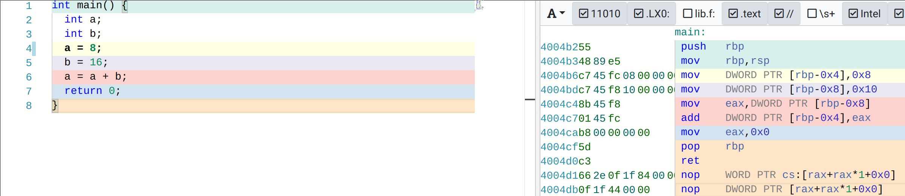
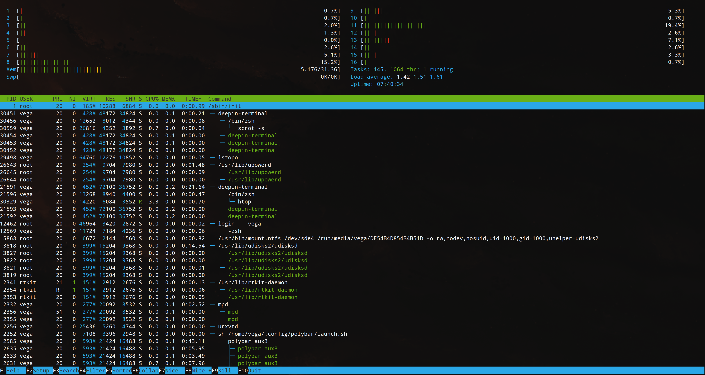
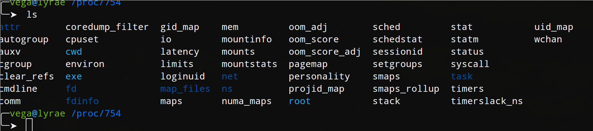
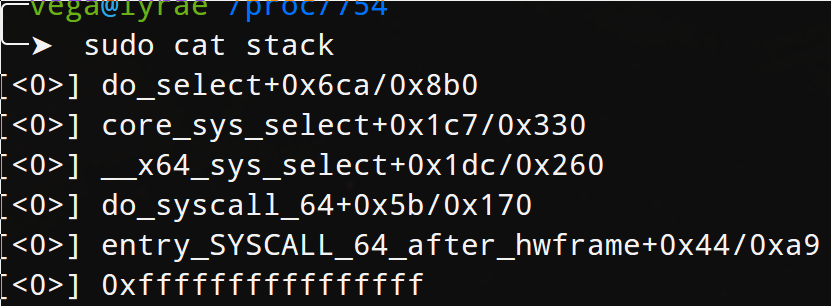
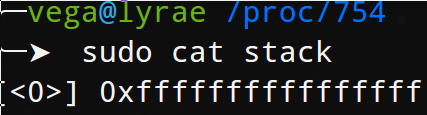
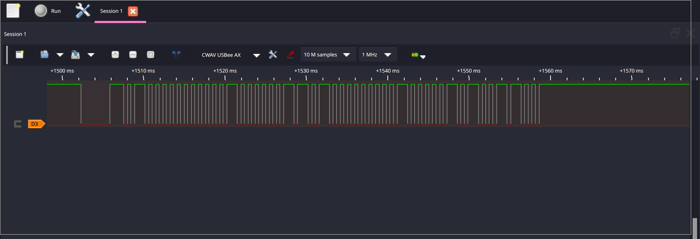
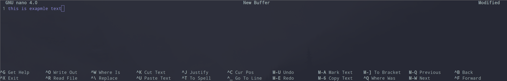
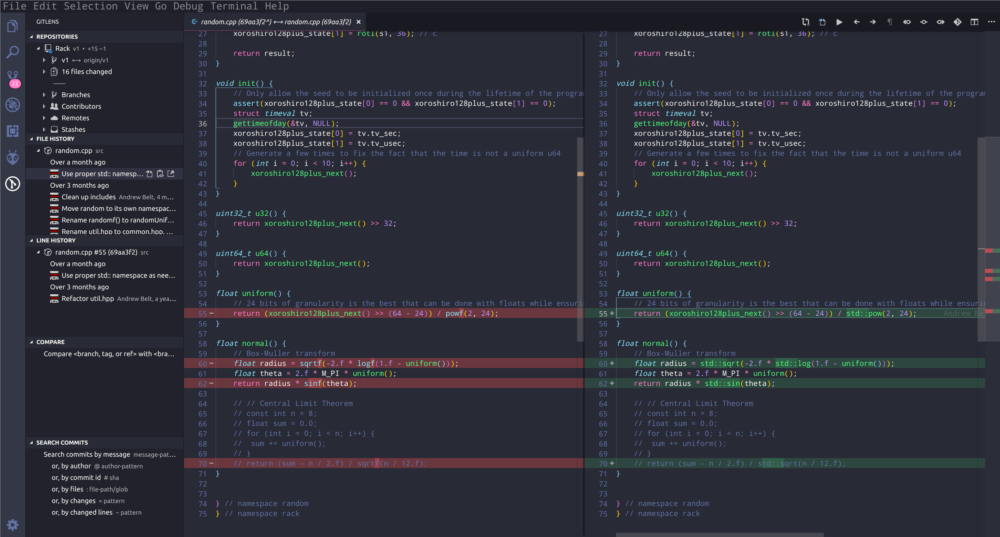
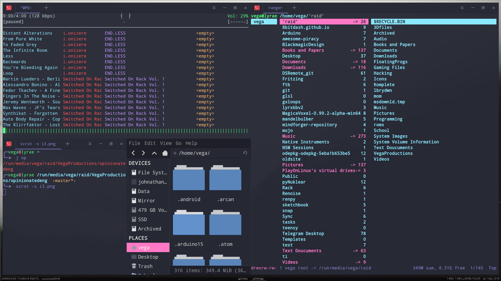

Opinionated Engineering
TABLE OF CONTENTS
- Preface
- Ⅰ - Community
- Ⅱ - Learn how to learn
- Chapter 1 - The first goal
- Chapter 2 - Let's do it then, Installing Arch Linux
- Chapter 2- So Why Did I do all of that exactly?
- Chapter 3- Into the hardware
- Chapter 4- Back to the Root of Things
- Chapter 5- Resistance, Capacitance, and Inductance
- Chapter 6- Let's work on how we work
- Chapter 7- Let's write some low level code
- Chapter 8- Networking
- Chapter 9- High Level Overview of Math, Physics, and Chemistry (Sorry...)
- Chapter 10- Diodes, Transistors, and Integrated Circuits
- Chapter 11- Embedded Systems
- Chapter 12- Discrete Math and Algorithms
- Chapter 13- Writing a larger program
- Chapter 14- Servers!
- Chapter 15- Databases
- Chapter 16- Debugging
- Chapter 17- Compilers and Assemblers
- Chapter 18- Automated Testing
- Chapter 19- Exploitation
- Chapter 20- Let's make our own PCB
- Chapter 21- We've got cores, let's use em'
- Chapter 22- (((())(()((()(()))))))
- Chapter 23- Security
- Chapter 24- Open Source
- Chapter 25- Graphical Programming
- Chapter 27- Back to the Lab again
- Chapter 28- Let's make our own CPU
- Chapter 29- Where to go from here
- Chapter 30- Things to avoid
- Appendix A- Using the Linux Shell
- Appendix B - Common Graphical Linux Utils
- Appendix C - Common electrical parts (appearence and numbers)
- Appendix D - BOM
- Appendix E - The Politics of it all
- Appendix F - Other Great Resources
Preface
Hey there.
My name is Vega. I know there are plenty of tutorials and ways to learn online be it on YouTube, SkillShare, or online classes provided free by various universities. The difference here is there is no bullshit, no babysitting, and lots of bias as a result of personal experience. My views of things like what programming languages are bad or what hardware you should buy to learn on will be expressed directly and bluntly. This isn't to say I won't explain my reasoning, just that I'm not going to be apologetic when I say javascript, php, java, arduino, and Windows 10 are trash - though I will still likely talk about all of these things.
I by no means expect you to share my same biases, in fact, I hope you do not and that at one point or another we can discuss why you think I am wrong, as that is the only way I can learn.
With that said, what is this exactly?
This is a guide for understanding the power the humble electron has in our lives. Electricity, digital logic, code, computers, embedded systems, these things are all around us every second of everyday. As I type this I'm wearing a smart watch, I have a smart phone in my pocket, and I'm directly using a desktop computer. Each of these devices contains dozens of smaller computers, power supplies, wireless interfaces, etc. My goal with this is to teach you how all of this works and how to use it from transistors to high level code to useful user applications.
I will be assuming you are of reasonable technical ability already- that is the concept of how to proficiently use most types of software, navigation of a file manager, etc- furthermore, I will avoid going into high level math, chemistry, and physics as much as is practical- mostly because knowing these things is typically not actually useful in the daily life of someone who works on any of this beyond those that are doing cutting edge research or are planning to teach, in which case you should actually go to college instead of reading this. For everyone else, welcome. This is the document which can save you going to college and taking classes full of useless information you will inevitably forget and for which employers don't care about to begin with.
Following along will require a few things. The first of which is dedication and time. If you don't have the desire to put in at least a little bit of work there is simply no way I can help, that said, if you're reading this instead of watching Netflix I believe that's already proof enough you want to learn. Next is hardware and software, namely you'll be needing a few development boards and linux, but I'll get into those with time; however, for convince, everything referenced to be downloaded or physical items to be purchased are all listed in Appendix D
[TODO]
https://www.youtube.com/watch?v=SzJ46YA_RaA
https://www.youtube.com/watch?v=tpIctyqH29Q&list=PL8dPuuaLjXtNlUrzyH5r6jN9ulIgZBpdo
Ⅰ - Community
The only way to be successful in this journey is to make friends along the way. Some of this get's really, really difficult. You will get stuck. Having friends to help makes it possible. Find group chats on telegram, join IRC channels, get on some forums, and ask questions on Reddit. Working with people is a lot more fun and you'll learn so much more.
Beyond that, having inspiration each day can be a huge booster shot to your motivation and creativity. Some sites I use nearly daily to finding good new material are:
https://hackaday.io/ | www.hackster.io/
https://www.bleepingcomputer.com/
https://www.humanreadablemag.com/morningcupofcoding
While much less active, I've found some of these to have great information as well
https://n-o-d-e.net/index.html
https://www.alchemistowl.org/pocorgtfo/
https://www.youtube.com/user/DEFCONConference
Oh, and to mention it now

Yes, there is always a relevant XKCD, and yes, you will always feel like everyone knows more than you. Don't stress about asking stupid questions:
Frequently in chats, whether telegram, IRC, slack, or discord, someone says something like this:
Anyone know rust? Having an issue. How that question is often read: Can someone to commit to being able to solve my problem with rust, spending as much time as necessary, without them even knowing what the actual problem is or if it's even a rust problem? Hopefully it's clear why questions like this rarely result in direct answers. - There are very few people who could be called experts in every facet of whatever is being asked - Imposter syndrome is common - Most people won't write that blank check for time/help commitment #### Instead, share: - The goal - "Trying to query for a list of tags on a post" - See [The XY Problem](http://xyproblem.info/) - The problem - "I'm getting back these results" - The expectation - "but it should be these results" - Any context or previous research you've done - If possible, a simplified example. 3v4l for php, jsfiddle for html/js/css, etc. are great, otherwise a paste site. - What you've already tried This allows anyone there to try to help. Many skills transfer well to other languages or platforms. At minimum, you might get an idea for something you haven't tried yet. Sometimes you'll even solve your own problem while narrowing down the simplest possible test case. Oh, and don't snark at well-intentioned answers. It's rude and discourages participation.
--from https://bad.pet/q/
The technical community can be ruthless with it comes to expecting people to have 'basic' knowledge sometimes, but don't let it get to you. I do want to provide some general ideas that, while not universally, are generally shared among the engineering and sounding community:
Ⅰ - Any good solution is fast, easy to understand, and above all elegant.
Ⅱ - Any task which can be automated should be - if a computer can do it faster than you than you shouldn't do it by hand
Ⅲ - Any problem that has been solved in a way that satisfies the above two rules should be looked at for reuse before reinventing the wheel
Ⅳ - Any question which has already been answered should not be left to a human to answer again.
Ⅴ- All knowledge should be free†
† within practicality, trade secrets are obviously a thing, and I'm not crazy. I mean like publicly funded research and what not. While the specifics of this rule vary amongst engineering types it is generally a core belief.
On the note of point Ⅲ...

Though the one I was stressing here was really Ⅳ, you should always check the internet before asking in chat. It's not that we're being rude, it's just a matter of courtousy. If you're unsure of the answer or it's validity in your case, by all means ask, but asking good questions, and only when necessary, will quickly help you make friends in chat much faster. Note, there is one exception: if chat is currently talking about something that you know don't know about and it's already relevent to the conversation, it's totally reasonable to interject and ask for a superquick primer on what's going on or a relevent link. This may seem obvious, but a good number of technical chats die because of exectaly the afforementioned problems. (or gatekeeping, but that's a whole different matter...) so please don't ask things a search engine can already answer (but don't feel bad asking a question when the all mighty Google can't)
TLDR: RTFM & STFW http://www.catb.org/esr/faqs/smart-questions.html#rtfm
Finally, and I can't stress this enough, I think balancing your creativity among other interests and looking for ties between them can lead to more good than any of thing mentioned above. I enjoy playing music, reading, and writing, so I find inspiration in these media. There are countless electrical hardware and software tools that use hands on programming when playing music. In books I find ideas for what an author may have thought only futuristic when written. I never know when my mind will strike similar gold when writing for myself. Find a hobby and bend it to this as you go along. Like photography? Lean about the internals of a camera. Like cars? Look up how the ODB2 interface actually works. Nothing is magic and the internet will likely have answers and give you ways to apply this knowledge that you care about.
In general I've found site specific forms and reddit to be the best platforms for most things, with some others finding their main following in other places though. For example I'm in a large technical chat group with Furries on Telegram and some open source tools still thrive on IRC.
Ⅱ - Learn how to learn
I'm going to keep this short and sweet: Nobody learns (effectively) by being shown what to do. You can watch hundreds of hours of people playing guitar, even explaining how they do it, but you wont be able to randomly pick one up and play if you never have before. Furthermore, as much as you can learn from direct reading and instruction, it has it's place and limits. This guide, book, whatever you want to call it, was never meant to be followed like instructions. You should go out on your own and poke around as you go though. If you find a topic dull, don't read it as in depth. I don't want you wasting your time. Break things. Make mistakes. By the end of this you should know what a burning resistor smells like, what it's like to try to recover a slightly busted linux system, and how it feels when a bug has been eluding you for hours and your code still doesn't work. The only way that happens (unless I made a mistake which is also probable) is if you try ideas when you get them and do more than what's in this book.
This struggle is part of learning and proof that you're doing well. These experinaces should teach you things in their own right. The smell of burning elcetronics may help you diagnose a future circuit, the lesson to not fall into a pit of technical debt may help when a bug has engulfed your code, and the late night of terminal only based work as you try to get your computer working again will teach you more than this book ever can.
Chapter 1 - The first goal
Every journey needs a place to start, and while many may like to start slow I think a head first approach is best. So that's exactly what we're gonna do. The very first thing we're going to do is install a new operating system (OS) on your computer.
Quote boxes like these will provide notes throughout the guide, often definitonal. If you already understand everything prior to each box, you can probably safely ignore it, though it will occasionally be used for actual quotes as seen prior to this
Operating System: According to wikipedia, "An operating system (OS) is system software that manages computer hardware and software resources and provides common services for computer programs." put simply on your hardware this is probably Windows or Mac OS, and it's what everything else runs ontop of
You should really make a full backup of your computer before doing this, as installing an operating system can rather easily lead to lost files when you reformat or reparation your drive or when you change settings in the BIOS/UEFI and swap the bootloader.
Reformat: the bulk storage device in your computer, the hard drive or solid state drive, needs to be formated before use, this sets up a way for the computer and the drive to agree on a base system for how partitions should be setup, speaking of which:
Repartion: To partition a drive means to take all the space on the hard drive and divide it into partitions onto which you can put a file system. Most operating systems like Windows, Mac OsX, or Linux, use multiple partitions for the operating system to function. Usually a filesystem is set up on each of these partitions, in windows this is typically NTFS for Hard Drives and FAT32 for flash drives, these file systems are effectively the index for all the files you'll put on the drive, and as you may have multiple partitions and multiple file systems on one disk each will have an index to match. As complicated as it may seem this means the partition table can be seen as an 'index of inecies' of sorts. Don't worry if that's a lot to understand right now, we'll come back to this topic in depth. BIOS/UEFI: The Binary Input Output System or Unified Extensible Firmware Interface is the thing you see before you computer loads the operating system, usually prompting to press delete or f2 to change settings. This is the system that is used to change the way all the components around the computer talk to one another and at what speed. Bootloader: The bootloader sits at a special place on the hard drive selected for boot in the UEFI or BIOS, and is what the computer uses to load the full operating system, most will let you chose what operating system you want to boot if you have multiple installed on you computer at once
Alright, so why do I want you to install a new OS to begin with? Well, the OS we'll be using is called Linux. Linux is actually what powers both android and chomeOS, and is a common descendant of the same system as Mac OsX as well as almost all of the servers on the internet from massive website like Facebook and Google to small Minecraft servers you can rent online to play with friends. What's cool about Linux is it lets you get much closer to the hardware and see what's going on, and it just generally makes writing code much easier. Furthermore, it's super easy to set up an amazing development environment in Linux for getting work done with code or electronics, and at the end of the day you can still watch YouTube, play most games that are on steam, or open up an office suite, just like Windows or Mac.
Chapter 2 - Let's do it then, Installing Arch Linux
First of all, Linux is actually just the name of the underlying 'core' of the system, known as the kernel, as such, there are literally thousands of Linux variations. The one I'm going to have you install is know as one of the hardest to work with, but also one of the most powerful: Arch Linux.
Because the various distributions or 'distros' of Linux all have this common core the particular brand of choice is of little consequence. For most distros like Ubuntu or OpenSuse (feel free to look these up, this page isn't going anywhere) there's a nice graphical, point and click installer which helps you install the system and somewhat mitigates potential risk of killing your original OS (Mac/Win) or losing data; however, the goal of this guide is to learn. Arch's install process is hard, but that difficulty leads to a deeper understanding and respect for the system as a whole.
Install instructions will vary dependent on your hardware, but I'm going to assume you have a desktop or laptop which shipped with Windows 10 and has a UEFI system. Most laptops newer than ~2016 should be in this category. If your system uses a BIOS or Legacy boot instead, or if you have a mac, this won't apply to you.
Alright, so what exactly are you getting yourself into? Well, I'll be real with you, a lot. Installing Arch sucks. Things can go wrong, it's not user friendly at all, and is generally a pain, and if you screw up you'll need someone who can restore your computer to at least having Windows on it again so I'll say it again- Make a backup of your entire hard drive before proceeding, if you don't know how to do this, google it.
Okay, so, with that said let's dive into it. After you have a backup, you'll need to head on over to https://www.archlinux.org/download/ and if you have a torrent client installed use the provided BitTorrent Downloads, if you have no idea what that is, look at the below box
BitTorrent: Torrenting is type of download that runs over a distruibuted peer to peer, this means you're directly downoalding the file from multiple people rather than from one large server. Popular clients on Windows include uTorrent, qBittorrent, and Deluge
You may want to go grab a coffee while it downloads depending on your connection, though the image should be rather small. Once that's done downloading your torrent client should automatically confirm the image by checksum, but as this is a good learning opportunity let's do a manual double check as well.
checksum: a mathmatical summing of the bits in a file combined with some sort of cypher to produce a 'hash' which can be checked to against one that is known, any modification would result in a differnt hash. This protects against malacious actors putting bad things in the code as well as from a corrupted download.
To do so open up a command prompt on windows, and we'll need to navigate to the location of the downloaded file it should be nammed something along the lines of archlinux-20xx.xx.xx-x86_64.iso and be in your Downloads folder. When you open a command prompt on Windows it should start out in your user folder (C:\Users\%username%). To list the folders in this folder you can type 'dir' and press enter. You should, at minimum, see folders like 'Downloads' 'Desktop' and 'Documents' to enter the Downloads folder simply type 'cd Dow' and press tab, the line should auto-complete to 'cd Downloads', then press enter. Now you can run 'certutil -hashfile arch' , presstab to complete it to 'certutil -hashfile archlinux-20xx.xx.xx-x86_64.iso' then add 'sha1' on the end so the finally command looks like
certutil -hashfile archlinux-20xx.xx.xx-x86_64.iso sha1Note, if this spits out "The process cannot access the file because it is being used by another process." you'll need to close your torrent client or stop seeding the file first!
So let's look at this command. The first part, certutil, is a program on your computer, '-hashfile' says the next string of text is the name of the file we want to examine, and the last part sha1 is the checksum as mentioned before. Finally, if you go back to https://www.archlinux.org/download/ and look under 'Checksums' you can compare the output of the command you just ran against the SHA1 sum provided to be sure you didn't have any errors in the file. This is mostly a security check as in theory someone could provide a 'bad' version of the OS containing malware, but such a version would produce an incorrect checksum, in practice this is extraordinarily uncommon.
Okay, so we have the OS, how do you install the damn thing? Well, get ready for a fun time. The first thing you'll need is a flash drive with nothing on it you care about, as it's going to be reformated, which will wipe any data on it. To install an OS you have to create 'bootable media' this used to be done with a CD, though mostly it's done with flash drives now. You'll actually be putting the OS on the flash drive and then using that to put it on your hard drive.
Let's not get ahead of ourselves though, we need room to put the new operating system in! Thankfully Linux is small- really small. Even 50Gb should be plenty for the OS, all your programs, and tons of room to spare for data, but I typically recommend at least 100GB, and since we'll be installing a lot of development tools, it makes sense to do this right to begin with. When you got your computer with windows is likely that all of the room on your hard drive was pre allocated for windows (as it should be!) so we'll need to shrink this down and make room for windows. Open the start menu and type 'disk manag' and hopefully "create or format hard drive partitions" will show up as an option. At the bottom you should see a few bars showing partitions on your disk(s). If you have multiple hard drives there will be multiple rows of bars, otherwise there will be only one row. If you have multiple drives it's likely that one is a larger hard drive (HDD) and the other a smaller solid state drive (SSD), if you have room on your SSD use that, if you don't using the HDD will be fine, but the OS may feel slower than you're accustomed to. If you only have one drive, ignore this. Right click in what is likely the largest box, labeled 'primary partition' and chose 'Shrink Volume'. After it finishes querying available disk space enter 102400 as the amount of room to shrink (This is 100GB as there are 1024MB in a GB) or a lower or higher value as you please, but realize this is data you will not be able to access from windows.
If the window shows 0MB of available shrink space first try running disk cleanup and choose cleanup system files, try turning off system restore, and finally disable the page file. In my experince it's usually the pagefile, which kinda sucks. If none of this works, you do have another option: wiping everything and installing linux. This is actually easier, however, it's a bit more extreme, as you won't be able to boot back to windows for anythig. You may instead want to try linux out on an old usused computer first. Either way, you do you, but I'm not liable if things go wrong. https://medium.com/@terajournal/increasing-size-of-available-shrink-space-for-hard-drive-partition-in-windows-8fffa50535d3
Alright, we're getting there I promise. You should now have a gray block next to that blue block of space that shows unused space, that's perfect. Next up we'll need to turn Fast Boot off. In my experience turning this off doesn't effect windows boot time at all, and by having it off we'll be able to access window's file from inside linux later. To do this: go to 'edit power plan', then in the top bar navigate back to 'Power Options', select 'Chose what the buttons do' on the left side, click 'Change settings that are currently unavailable' and then un check 'Turn on Fast Startup'.
Okay, now we're finally ready to copy the OS to a flash drive so we can install Arch, to do this, you'll need to download a program called rufus https://rufus.ie/. Download, run, etc. When it opens select the flash drive as your 'device' , press the select button under that and select the archlinux-20xx.xx.xx-x86_64.iso file we downloaded earlier. Everything else should be fine, so click start. This may take a second, in the mean time, open this guide on another computer as the next few steps will require a lot of restarting and doing things outside of windows.
☠☠☠☠☠☠☠☠☠☠☠☠☠☠☠☠☠☠☠☠☠☠☠☠☠☠☠☠☠☠☠☠☠☠☠☠☠☠☠☠☠☠☠☠☠☠☠☠☠☠☠☠☠☠☠☠☠☠☠☠
▓▓▓▓▓▓▓▓▓▓▓▓▓▓▓▓▓▓▓▓▓▓▓▓▓▓▓▓▓▓▓▓▓▓▓▓▓▓▓▓▓▓▓▓▓▓▓▓▓▓▓▓▓▓▓▓▓▓▓▓▓▓▓▓▓▓▓▓▓▓▓ Seriously, backup your shit. I've done this countless times and have still managed to accidentally wipe a drive. There's a good chance you're about to completely murder your windows install. This is a necssary evil to learn, and I assure you'll be happy you've done all this, but this next bit is actual hell for people. I'm sorry it gets so bad so early. I promise it's worth it, okay? ▓▓▓▓▓▓▓▓▓▓▓▓▓▓▓▓▓▓▓▓▓▓▓▓▓▓▓▓▓▓▓▓▓▓▓▓▓▓▓▓▓▓▓▓▓▓▓▓▓▓▓▓▓▓▓▓▓▓▓▓▓▓▓▓▓▓▓▓▓▓▓
The next section requires a lot of reboots and has steps where you can't have this guide open on the computer you're working on. Don't be stupid.
Now you'll need to power off your computer. Turn it back on and as you do mash the everliving hell out of both f2 and delete (unless you know what key gets you into the UEFI / BIOS settings). This should bring up a menu that either looks super fancy or looks stright out of the 80's. Either is fine. The setting we're looking for is 'Secure Boot' it's probably under a menu called 'Boot' or 'Security'. You'll need to shut this off. In theory secure boot should protect against a nasty kind of virus called a rootkit, in practice it doesn't and only serves to make installing linux more annoying, don't worry, I'm a security nut and am comfortable leaving it off. Exit and save settings, and as your computer boots again mash F11 or whatever key gets you to a boot menu, and select your USB key. If it shows up twice try the first one first, if that doesn't work try the other one. (If you end up back in Windows just restart and go back into the bios settings, go to 'Boot' and reorder the boot menu entries so your flash drive is the first option) The system should boot first to a screen with a few options, pick Arch Linux if you have to or just wait for it to move on. You should, with any luck, see a list of text flash down the screen that looks roughly like
[OK] doing thing
[OK] starting thing
[OK] did thingThen, you should be greeted by a mininal prompt that looks like
root@archiso ~ #and that's it. Congrats, you've already made massive progress.
This is arch, but it's not actually installed yet, right now your entire computer is running off the flash drive. So let's get it installed.
You'll need an internet connection to do anything, if you can connect you computer to the network though ethernet directly, that should be much, much easier than doing things though wifi. If you absolutely must do things though wifi, well, first, really don't. I mean, you can, but's a solid pain. I'm going to assume you're not. Cool.
If you didn't connect your computer to ethernet before you started arch, the first thing you should type in this prompt is
systemctl dhcpcd restartthis manually restarts the service that asks the network for an IP address, which you need to do since currently the system is in such a minimal state it won't do that automatically.
Now, try
ping archlinux.orgif you see something like '64 bytes from apollo.archlinux.org', congrats! You're online! If not, you may try a different network or wireless if applicable (seriously, it's a pain)
From here, you'll need to see the names of the hard drives on your system. run 'lsblk -f'.
but what does that even mean? well, let's learn about another command! 'man'
for most commands on linux if you type 'man' before the command with no flags (the -x things after the command) it'll open a manual page for the command. Read here to figure and try to figure out what lsblk is and what -f does.
lsblk lists information about all or the specified block devices. The lsblk command reads the sysfs filesystem to gather information. The command prints all block devices (except RAM disks) in a tree-like format by default. Use lsblk --help to get a list of all available columns. ... The default output as well as default output from options like --topology and --fs is subject to change, so whenever possible you should avoid using default outputs in your scripts. Always explicitly define expected columns by --output columns in environment where a stable output is required. ... -f, --fs Output info about filesystems. This option is equivalent to "-o NAME,FSTYPE,LABEL,MOUNTPOINT". The authoritative information about filesystems and raids is provided by the blkid(8) command.
Okay? Well, that probably doesn't mean much so lets focus on the important bits
"lsblk lists information about all or the specified block devices. The lsblk command reads the sysfs filesystem to gather information."
Block devices are devices that have 'blocks' of information, like hard drives, flash drives, solid state drives, sd cards, etc.
"-f, --fs ... Output info about filesystems."
This means we'll be able to see what type of file system is on each block device.
So, we can use this command to see information like we saw graphically back when we opened disk management in windows, only now with their linux names. In linux each block device is actually stored as a file, as bizarre as that may seem. This file is actually located in the dev folder which sits on top the root folder. The root folder is simply designated by a single '/' so a normal file structure may look like '/home/USERNAME/Documents/office/' and so on. It's worth noting that '/' is actually a folder in itself, it's just the absolute bottom folder, hence it's called the root folder. So the dev folder is located at /dev. In /dev there's a lot of things, but at the moment what we're really concerned about is the storage devices. so, looking at this example output from lsblk you'll see three storage devices /dev/sda /dev/sdb and /dev/nvme0n1
vega@linux ~ # lsblk -f
NAME FSTYPE LABEL UUID FSAVAIL FSUSE% MOUNTPOINT
sda
├─sda1
├─sda2
├─sda3
└─sda4
sdb
├─sdb1
└─sdb2
nvme0n1
├─nvme0n1p1 ntfs Recovery 36C8A86BC8A82B57
├─nvme0n1p2 vfat E2AB-10F2
├─nvme0n1p3 ntfs DE54B4D854B4B51D
└─nvme0n1p4What do these mean? Well, most drives in linux are simply designated by a /dev/sdX where x is just the next available letter in the alphabet, though on some newer systems like mine, you may find some blazing fast SSDs actually use that other odd nvme syntax. Both work exactly the same way for what were doing.
looking at that output again you'll see each device has multiple things under it. For example /dev/sda has /dev/sda1 all the way though /dev/sda4. Each of these are the separate partitions. In this particular example, sda is actually the flash drive we're running off of, so you can see that it is currently where our root file is '/' on /dev/sda1 and that it's an ext4 file system (I'll explain this a bit more in a bit) you'll also see there's another partition that's formatted as fat32 for boot, but all of these are on the flash drive because they're on sda.
For Simplicity now we're actually going to look at a simpler 'lsblk -f' output with only /dev/sda and sdb. sda is still the boot usb stick you're on, but sdb is now the singular drive in a laptop that has windows installed and available free space in accordance with this guide.
root@archiso ~ # lsblk -f
sdb
├─sdb1 ntfs Recovery 36C8A86BC8A82B57
├─sdb2 vfat E2AB-10F2
├─sdb3 ntfs DE54B4D854B4B51D
└─sdb4alright, so now on sdb we see there's 4 partitions (sdb1,2,3,4) where in this case we have sdb2 as a ~512Mb vfat partition, sdb3 as a 300Gb NTFs partition, and then that blank partition we made on sdb4. That 512Mb partition contains the bootloader for both windows and soon linux. The larger NTFS file system is where Windows and all your programs documents and other things you've done on your computer in the past live. I hope now it's obvious why I urged backups, as we're about to play around with things a bit.
We're going to need to make some changes this list tough, as we actually need one more small division in the partition table. run the command
root@archiso ~ # cfdisk /dev/sdbthis should bring up a strange command line based almost graphical interface which you can used to edit, add, or remove partitions. With that 100Gb (or whatever you chose free space we made earlier), let's divide it into two partions, one that's 8GB and the other that's just what's left. We're doing this so we have somewhere to put SWAP in a second, but let's get to that later, for now just use your arrow keys and highlight the large empty block and select new, select primary, then make it 8GB, which is 8*1024Mb or 8192, and then select end. Finally write it, then quit. Whew. Bit stressful even for me. Don't worry, Linux get's much much easier, especially when we get our graphical tools back.
now, run lsblk again. You should see something like
root@archiso ~ # lsblk
sdb
├─sdb1 ntfs Recovery 36C8A86BC8A82B57
├─sdb2 vfat E2AB-10F2
├─sdb3 ntfs DE54B4D854B4B51D
├─sdb4
└─sdb5so now we need to format these partitions with a file system. For the root file system, where we're gonna put all the programs, files, and the OS itself we'll use the ext4 file system. It's by far the most common file system for linux. To do this look at the lsblk output and look for the large empty space we left (not the 8Gb space we just made!) and run
root@archiso ~ # mkfs.ext4 /dev/sdxywhere xy is the correct letter and number for your partition, in the above example that's /dev/sdb4, as sdb5 is the 8Gb partition we just made
alright, that's actually most of the really hard stuff done. Now we need to mount both the file system we just made and the boot filesystem. run:
mount /dev/sdbx /mnt
mount /dev/sdby /mnt/bootwhere x is the same as the above x and y is the number of the partition with the windows boot manager. sdby should be roughly 500 megabytes and be vfat, it may appear as 'EFI partiton' in cfdisk if you're unsure.
Next up we need to install the base of the os to these drives, this is actually pretty easy just run
pacstrap /mnt base base-develthen, we need something that tells the system the names of our partitions and how to mount them at boot. Thankfully, the system can generate (most) of this for us, just run
genfstab -U /mnt > /mnt/etc/fstabwhat this command does is looks at the id's of the drives in /mnt (the ones we manually mounted when we ran mount a few commands ago) and redirects those id's and the settings used to mount them (which were default) and writes that output using '>' as a redirect to a file stored in /mnt/etc/fstab. Because /mnt is the location where we mounted the harddrive, it's actually writing a file to the hard drive now, just as pacstrap just did.
Alright, next we need to use a command that you'll probably never use again- chroot. This changes your root directly to be higher up the chain, effectively cutting off access to lower files, though we need to do this to install our bootloader, again this is easy
root@archiso ~ # arch-chroot /mntwhich will change the above to look like: ' root@archiso ~ # ' to ' root@archiso / # ' as that '~' was actually a shorter representation of being in /home/root (there's actually a user nammed root by default, and the user has it's own home directory. It's easy to confused root the user with root the directory, but you'll get it eventually if you don't now that's okay c: )
now we can install the bootlooder with
root@archiso / # bootctl installNow we need to add a bootloader entry for arch. We're going to use a very simple command line text editor called nano. it's sorta like notepad on windows.
root@archiso / # nano /boot/loader/loader.confthis will bring up a text editor, it says how to operate it at the bottom (ctr+o to write out = save, crt+x to exit, etc)
enter, exactly: (Note line 2 says linuZ-linux, that's not a typo, and replace the x with your root partiton)
title Arch Linux
linux /vmlinuz-linux
initrd /initramfs-linux.ing
options root=/dev/sdbx rwand for our last trick before we reboot save and exit nano with ctr+o, ctl+x then, run
root@archiso / # nano /boot/loader/loader.confand enter
timeout 3
default archthen, we're ready to reboot into the new OS!
run consecutively,
root@archiso / # exit
root@archiso / # rebootand pull the flash drive out. If all went well your system should boot to Arch. If it didn't, first make sure it's set to boot to arch in the BIOS/UEFI's boot settings, and then if things are still broken try to figure out why, there are plenty of people in the community willing to help, including me.
Assuming it booted back up to a similar looking prompt but with no flash drive we have to do some house keeping but you'll have a bad ass system in no time.
First things first enter 'root' for the user name, this should let you login.
then run 'passwd' this will prompt you to set a password. For the love of god don't forget it.
Next you'll need to set a hostname, this is how your computer id's itself on the network, so might help if you make it something sensible like 'usernamelinux' to do this run
echo 'mynewawesomehostname' > /etc/hostnamethen let's add a user, as using root all the time is very unsafe. To do so run:
(I recommend using the same password you used for root)
useradd -m -G wheel mycrappyusername
followed by,
passwd mycrappyusernameI swear to you we're getting there.
run
EDITOR=nano visudothen find the line that says
# %wheel ALL=(ALL) ALLand remove the '#'
As an explanation, the '#' is turning that line in that file into a comment, in programming it's common practice to use comments to disable sections of code so say we had a program:
for i in range(5)
#print(i)
print(i/2)the # before print(i) is preventing it from actually executing so the output of this would be {1/2,1,3/2,2,5/2} instead of {1,1/2,2,1,3,3/2,4,2,5/2,5}
Anyway, with that out of the way let's find fix up networking so we can get online and run updates
run ip link and look for the name of your network interface. If it's a wired adapter it should be enpXsY where X and Y are number, wif is similar but uses wlp instead of enp. To make sure the network brings itself up on each boot let's enable dhcpcd - that service we restarted way back when- on that interface. Just run
systemctl enable dhcpcd@enpXsY.service
this enable it at each boot however we should
start it now because this is the frist time
systemctl start hdcpcd@enpXsY.servicenext up, we should make sure things know what language we speak. Assuming you want to use US english just run
locale-gen
followed by,
localectl set-locale LANG=en_US.UTF-8Timezones, run each independently
tzselect
timedatectl list-timezones
timedatectl set-timezone Zone/SubZone
hwclock -systohc -utc
timedatectl set-ntp trueIt's worth noting Linux and Windows use differenent clock standards so every time you reboot between the two windows will messup the clock, to fix it in WINDOWS you can run
reg add "HKEY_LOCAL_MACHINE\System\CurrentControlSet\Control\TimeZoneInformation" /v RealTimeIsUniversal /d 1 /t REG_DWORD /fin an admin command prompt
Alright, we're getting close to graphical stuff now, I swear. Remember that 8Gb partion we made a while ago, time to use it. Now that we're in the full OS the're a good chance the location names of the partitions changed so run lsblk -f again and figure out where that 8Gb portion is
lsblk -f
mkswap /dev/sdXY
swapon /dev/sdxythen, we need to edit the fstab file we generated earlier.
Let's look at what the fstab file looks like right now. We can read a file from the command line without opening it up for editing with cat, so run
cat /etc/fstaband you can see what it looks like. See all those super long UUID's? We need the right one of those for our new swap area. Thankfully there's an easier way to do this than writing it down on a sticky note.
if we run lsblk -no UUID /dev/sdxy (obviously substitute x and y) you'll get this UUID, so let's just append it onto the end of the fstab file!
Remember how we used the '>' character before to write the output of genfstab to /etc/fstab, well you can also use two of that same character to append an output to a file. However, before we do that let's be safe rather than sorry and make a backup of the fstab file by first moving to the /etc directory then making a copy of the file
cd /etc
cp fstab fstab.bak
lsblk -no UUID /dev/sdxy >> fstabnote we didn't need to type /etc/ before each fstab because that's a file in the folder we're already in.
but we're not done yet. use nano to open up the fstab file and edit it so the last line we just appended looks more like:
UUID=whateverthisis none swap defaults 0 0Save and close nano and then to finish up swap all we need to do is edit one more file
nano /etc/sysctl.d/99-sysctl.conf
and add the single line
vm.swappiness=10Alright, lets run an update and reboot!
For now to do updates we'll use pacman (short for package manager)
run 'pacman -Syyu'
The -S says to Sync, or actually apply the updates, the double y's say to force grab the newest database (usually only use one y) and u means upgrade. If you want more detail run man pacman
Once that's done you can run systemctl reboot
Finally, we're going to get a graphical environment running.
Once the system reboots login with your username, not root. When you type your password you won't see anything, but it is actually typing!
then run:
sudo pacman -S xf86-video-vesa mesaThis command uses sudo or 'superuser do' because you're now logged in as a user, and as such need admin privileges to install software. This is part of why Linux is so secure. Pacman, again, is just 'package manager' , -S tells pacman to sync the requested packages from the server and the other two things are the two packages we want right now, both are used for video output.
To install the correct driver for your graphics hardware you can run
these next few commands use 'pipe' the character above enter on most US keyboards
lspci | grep -i VGA
and if that doesn't turn up anything
lspci | grep -i 3Dto find the vendor of your graphics card. If the output contains NVIDIA run
sudo pacman -S xf86-video-nouveaufor INTEL run
sudo pacman -S xf86-video-inteland for AMD run
sudo pacman -S xf86-video-amdgpuif you have multiple, it's safe to install both.
Alright, now we need to install the desktop environment. Because this guide to this point is probably already melting your brain I'll take it easy for a bit and we can install KDE-Plasma.
KDE Plasma is pretty big though, so we're gonna want to be sure we're using fast mirrors before we do anything else
sudo pacman -S reflectorthen we're going to temporarily switch to the root account using su all you have to do is type su and enter, then type the password
now run
reflector -c us -n 25 -f 5 > /etc/pacmand.d/mirrorlistFinally to install Plasma run
sudo pacman -S xorg-server xord-utils xorg-xinit xterm plasma kde-applications
then
sudo systemctl enable ssdm
amixer sset Master unmute
and finally, lets see the epic payoff of all the effort
sudo systemctl start ssdmNote that KDE Plasma is fairly large to download and a bit resource intensive. As an alternative if on older hardware
sudo pacman -S xorg-server xorg-utils xorg-xinit xterm mate mate-extra lightdm
then
sudo systemctl enebale lightdm
amixer sset Master unmute
and finally, lets see the epic payoff of all the effort
sudo systemctl start lxdmAlright, now you can take a few minutes to get used to how your new computer works, play with settings, etc.
before you wrap up lets do a tiny bit of houskeeping
sudo pacman-key --init
sudo pacman-key --populate
sudo pacman -S git --needed
git clone https://aur.archlinux.org/yay.git
cd yay
makepkg -Acs
sudo pacman -U
yay -S zsh
chsh -s /bin/zshfrom now on you can just open a terminal and type yay followed by your password to run updates.
Chapter 2- So Why Did I do all of that exactly?
Linux makes development of code particularly easy, so, let's write some code!
The first language we're going to try out is called python. Python is an interpreted language, meaning each block to be executed can be run one at a time, to show you, let's install it.
Because we installed yay earlier you could use either that or pacman, but let's just use yay for simplicity. From here on out I'll be coping directly from what my terminal prompt looks like. Yours, for now, probaly looks similar to:
username@root /current/folder $ command -to -be executedHowever, mine looks like
╭─vega@lyrae /current folder
╰─➤ command -to -be -executedso, install python just like we've installed other programs with python or yay
╭─vega@lyrae ~
╰─➤ yay -S pythononce that's done you should be able to start the python interpreter by simply typing python and pressing enter. This will give you a new prompt that takes python code as input
╭─vega@lyrae ~
╰─➤ python
Python 3.7.2 (default, Jan 10 2019, 23:51:51)
[GCC 8.2.1 20181127] on linux
Type "help", "copyright", "credits" or "license" for more information.
>>> the >>> is the prompt asking for input, go ahead and just try 1 + 1 for now
>>> 1 + 1
2Okay, who cares though, right? let's try something a bit cooler. Say you wanted to add up all the odd numbers up to 72? This isn't something that's trivial to do on most calculators and would be a real pain by hand, but it's trivial to do in python. The code to run this in python is
#note, this is to 73 becasue the range function include the first number and excludes the last
sum = 0
for i in range(1,73):
sum = sum + i
print(sum)when you type this in the prompt you'll actually be able to enter multiple lines when you write the for loop. There's no clear way to explain this in text, you'll just have to try it and see how it works, note the way python set up looping is by indentation, so you'll need to press tab when the prompt lets you type the line sum = sum + i so that it's obviously a 'child' of the for loop.
after you run the print statment you should see the output
╭─vega@lyrae ~
╰─➤ python
Python 3.7.2 (default, Jan 10 2019, 23:51:51)
[GCC 8.2.1 20181127] on linux
Type "help", "copyright", "credits" or "license" for more information.
>>> sum = 0
>>> for i in range(1,73):
... sum = sum + i
...
>>> print(sum)
2628
>>> exit()
╭─vega@lyrae ~
╰─➤telling us the answer is 2628. To make you feel like a bad ass, you actually just wrote code that's equivalent to this math $$\sum_{n=1}^{72} n$$ pretty cool right? But that's math? Who cares? Let's do something cool!
Python code doesn't have to be written in line by line, you can put it an a file and the computer will run that file as a program, so let's do that! But to do that we're gonna need something better than a terminal editor or an equivalent to notepad. There are actually text editors that make writing code much easier. Let's go grab the 'atom' editor. Hopefully by now you know the command! (The name of the package is just atom)
super quick detour: while you can open graphical programs though the start menu down in the lower left hand corner just like on Windows, you can actually open a program directly from the terminal. Interestingly, this can make a program that opens in a new window a 'child process' of the terminal, which is why we normally don't do this. What this normally means is that if you start a program from the terminal - the parent- and then close the terminal, the child process, in this case the graphical program you started, will die too. Strangely, atom actually separates itself from it's parent process almost immediately, which is why we can start it from a terminal and then close the terminal and it should stay running. so, let's do that.
╭─vega@lyrae ~
╰─➤ atomand a new window should pop up. It'll probably open with a few tabs welcoming you, asking if you want to install a theme, if you are okay sending atom usage info, etc. Uncheck boxes so these don't come up each time and answer questions as you please. Then, we're going to go up to the top and chose
file -> new file Then, down at the bottom right of the editor you should see something that says plain text click that and a box will appear asking for the name of the language you're working with. Obviously chose python.
alright, now we're ready to code! Let's put a bit more interesting of a progam in and then we'll talk about what it does line by line. I stole this code from https://matplotlib.org/2.0.2/examples/animation/animate_decay.html
#!/bin/python3
import numpy as np
import matplotlib.pyplot as plt
import matplotlib.animation as animation
def data_gen(t=0):
count = 0
while count < 1000:
count += 1
t += 0.1
yield t, np.sin(2*np.pi*t) * np.exp(-t/10.)
def init():
ax.set_ylim(-1.1, 1.1)
ax.set_xlim(0, 10)
del xdata[:]
del ydata[:]
line.set_data(xdata, ydata)
return line,
fig, ax = plt.subplots()
line, = ax.plot([], [], lw=2)
ax.grid()
xdata, ydata = [], []
def run(data):
# update the data
t, y = data
xdata.append(t)
ydata.append(y)
xmin, xmax = ax.get_xlim()
if t >= xmax:
ax.set_xlim(xmin, 2*xmax)
ax.figure.canvas.draw()
line.set_data(xdata, ydata)
return line,
ani = animation.FuncAnimation(fig, run, data_gen, blit=False, interval=10,
repeat=False, init_func=init)
plt.show()So you can just copy and paste all of this into atom, then use ctr+s to save it, and let's save it in the Documents folder as test.py - the .py extension is for python files.
Before we talk about our code, let's see it run!
Open up a terminal, and run cd Documents to get to your documents folder, ls to see what's in there, then ./test.py to run the program.
╭─vega@lyrae ~
╰─➤ cd Documents
╭─vega@lyrae ~/Documents
╰─➤ ls
test.py
╭─vega@lyrae ~/Documents
╰─➤ ./test.pyOops! that probably didn't run. If you look at the errors it will tell you you're missing matplotlib ad numpy, let's go get those
╭─vega@lyrae ~/Documents
╰─➤ yay -S python-matplotlib python-numpyNow it should work! run ./test.py again, and now you should see a decaying sine wave. Still not exactly something that get's the heart racing, but it does prove the power of programming! The code did all of that in under 50 lines of text!
Frankly, the code that makes this work is a bit complicated but we can go over some of the important bits
at the very top there are four important lines:
#!/bin/python3
import numpy as np
import matplotlib.pyplot as plot
import matplotlib.animation as animationthe first line uses a shebang #! followed by python's location, this tells Linux to use python (specifically python3) to run the code underneath, actually, that's the location of the python program we installed earlier. In Linux, most of your programs can be found in /bin
Next we have a bunch of imports. In most programming lanuges you don't want to reinvent the wheel so you'll use libraries. These are well documented, heavily tested, and optimized blocks of code you can use that you don't really need to understand how work under the hood, only how to use them. Although not used here, the most basic example would be advanced math in the math library, like
╭─vega@lyrae ~
╰─➤ python
Python 3.7.2 (default, Jan 10 2019, 23:51:51)
[GCC 8.2.1 20181127] on linux
Type "help", "copyright", "credits" or "license" for more information.
>>> import math
>>> math.sin(1)
0.8414709848078965
>>> math.pow(2,4)
16.0
>>> exit()on line 6 the math library, which gave us access to sin and exponent functions, was imported. We don't know how math.sin() works, but we know it does, and that's fine.
The same is true for numpy and matplotlib above, both of these are libraries, matplot lib is what handled actually putting the data on the screen, and numpy as can be seen on line 12 of the program:
yield t, np.sin(2*np.pi*t) * np.exp(-t/10.)is used for doing some of the math. Numpy is a common python library used for doing more advanced math really fast, we're not going to worry about that right now though.
the next thing you should notice is how the code is organized into blocks with def name(): like def data_gen(t=0): or def init(): these blocks of code are called functions and they let programmers break up code into re-usable pieces or just wrap up a lot of complicated things to make code more readable, for example imagine a function that takes two numbers and does hundreds of lines of complicated math with them (eww)
def mathyMess(num1, num2)
num1 = math.sin(num1) + math.pow(num1,num2)
# imagine hundreds more lines here
return resultthis would make it so latter in your code anytime you needed to do this math again you could just use
thing = mathyMess(42, 12)
otherThing = mathyMess(0, 2)
finalThing = thing + otherThingthis is much, much easier to read than a copy and pasted version without these functions or 'blocks of code' furthermore, if you accidentally made a mistake somewhere in the math in mathyMess you can fix it there rather than in each independent copy individually.
For now, we're going to take a bit of a break from code, but we'll be back.
Chapter 3- Into the hardware
The CPU
One of the nifty things we do pretty easily in linux is get information about our hardware directly. Just as when we were installing Arch and we used lsblk to see an overview of the disks on the system, we can use some other tools to find out some other information about the system. Let's start off basic and see what CPU you have. Go ahead and run
╭─vega@lyrae ~
╰─➤ cat /proc/cpuinfoThis is actually just using that same cat command we used before to read the system generated file that tells us about the processor in this system. I'm going to provide the output from my system for refrence
processor : 0
vendor_id : AuthenticAMD
cpu family : 23
model : 1
model name : AMD Ryzen 7 1700 Eight-Core Processor
stepping : 1
microcode : 0x8001137
cpu MHz : 2018.119
cache size : 512 KB
physical id : 0
siblings : 16
core id : 0
cpu cores : 8
apicid : 0
initial apicid : 0
fpu : yes
fpu_exception : yes
cpuid level : 13
wp : yes
flags : fpu vme de pse tsc msr pae mce cx8 apic sep mtrr pge mca cmov pat pse36 clflush mmx fxsr sse sse2 ht syscall nx mmxext fxsr_opt pdpe1gb rdtscp lm constant_tsc rep_good nopl nonstop_tsc cpuid extd_apicid aperfmperf pni pclmulqdq monitor ssse3 fma cx16 sse4_1 sse4_2 movbe popcnt aes xsave avx f16c rdrand lahf_lm cmp_legacy svm extapic cr8_legacy abm sse4a misalignsse 3dnowprefetch osvw skinit wdt tce topoext perfctr_core perfctr_nb bpext perfctr_llc mwaitx cpb hw_pstate sme ssbd sev ibpb vmmcall fsgsbase bmi1 avx2 smep bmi2 rdseed adx smap clflushopt sha_ni xsaveopt xsavec xgetbv1 xsaves clzero irperf xsaveerptr arat npt lbrv svm_lock nrip_save tsc_scale vmcb_clean flushbyasid decodeassists pausefilter pfthreshold avic v_vmsave_vmload vgif overflow_recov succor smca
bugs : sysret_ss_attrs null_seg spectre_v1 spectre_v2 spec_store_bypass
bogomips : 7688.44
TLB size : 2560 4K pages
clflush size : 64
cache_alignment : 64
address sizes : 43 bits physical, 48 bits virtual
power management: ts ttp tm hwpstate eff_freq_ro [13] [14]Alright, that's a whole lot of information, let's break it down.
First of all, almost all modern Central Processing Units (CPUs) have multiple cores, and as with most things in computers the're counted from 0, so on a 4 core computer you'll have cores 0, 1, 2, and 3. Multiple cores simply let your computer do things in parallel, running multiple programs or tasks at the same time
Next is the vendor ID, family, model, name, and stepping. My processor is an AMD Ryzen 7 1700. There's a pretty good chance your CPU will be made by Intel, and as such the family, model, name, and what not will reflect that. AMD and Intel are practically the only two laptop and desktop CPU providers, though in the feature we'll work with boards that use CPU's made by other manufactures. Really, most of this doesn't matter. Some CPUs are nicer than others, and if you follow the market or care it's easy to get a sense of a CPU's speed just based on it's name, but let's move on for now.
Next is
microcode : 0x8001137
cpu MHz : 2018.119
cache size : 512 KBEach of these things is very important, but I'm going to start with cpu MHz as it's probably the easiest to understand, however, to understand this we'll need to get even a bit lower level than this and learn about the electronic component that changed humanity: the transistor.
Clock Speed

However, to get to that we've gotta go just a bit further down the rabbit hole to the relay. Relays are super simple to understand, they're just a metal switch that is pulled open or closed using another input signal, basically imagine a light switch, where the switch itself is controlled by yet another electrical signal. Relays are slow though, they require a physical metal plate to move to change the connection. Because of this they have limited reliability and worth note they're actually loud. You can hear an audible click of the switch as they change state.
Enter the vacuum tube. Though rarely used today outside of high end audio and old radios, for a period of time the logic inside a computer used these tubes. Essentially theres three important parts of the tube, the Cathode, Plate and Grid. Put very simply the Cathode emits electrons and the Plate collects them. Where it get's interesting is the grid in between. By applying a voltage to the grid a signal can be controlled giving us the same ability to turn something on or off by a third wire as in the relay.
Worth note but irreverent for digital electronics, tubes and transistors can actually pass only a percentage of the input back out, based proportionally on the input. This actually means that both tubes and transistors can act as an amplifer, using a small input range to control a much larger signal. A single tube or transistor in conjunction with other components can be used to make a functional amplifier.
Though the real break though here was the fact that this was no longer a mechanical system. With relays there was a very slow limit on the rate at which they could respond reliably, but with tubes this increased exponentially. Tubes were still expensive, large, and power hungry though. However, with their advent early computers saw a massive boost in speed with a decrease in cost
Finally, enter the transistor. The physics here isn't that far removed from the vacuum tube, only now instead of a vacuum the electrons are moving though a semiconductor - typically silicon. Again this brought a massive shrink in physical size and increase in that rate at which it could respond. Pictured above are two discrete transistors, however, this is where this get's mind blowing:
The Ryzen 1700 CPU in the computer I'm typing this on has 4,800,000,000 transistors in a package that is only 213 mm², and finally, we can refrence the number output by cat /proc/cpuinfo
At the moment I got that output the transistors where being turned on and off at a rate of 2018Mhz. or 2Ghz. However, this system can run up to roughly 3.8Ghz. The faster this speed the faster your computer; however, your CPU will also use more power and run hotter. It's for this reason that most systems adjust the speed based on load. Doing simple things like writing this document and as seen with that output my system runs at nearly half speed which is actually the slowest it can run. Because the computer is hardly doing anything right now the majority of that switching is actually just doing nothing but using power running 'no operation instructions' the functional equivalent of just running 0+0 while it it waits for something to do.
The OS itself actually tells the processor what speed it should be running at. In Windows, when you change your power plan to 'high performance' one of the major things it does is not allow the processor to run at a slower speed, and in Linux you can similarly control this using some cpu speed commands. We'll get to that later though.
Finally it's worth note that on some systems, primarily high end desktops, you can actually run your processor outside of factor specifications by increasing the maximum clock rate of the processor. Doing this can lead to system stability issues and obviously leads to a higher power usage and heat output though. This process is known as 'overclocking' as your taking the internal clock of the processor beyond it's rating. My CPU, a Ryzen 1700, has actually been over clocked in order to get 3.8Ghz at all times on all of the cores.
Microcode
Modern processors are very, very complicated. So complicated in fact that there is a full very tiny computer in your processor. This computer does multiple things, but the main one we'll talk about is the translation between types of machine code. In order to understand this we'll need to look a basic program written in the language 'C'.
int main() {
int a;
int b;
a = 8;
b = 16;
a = a + b;
return 0;
}This code first makes two integers, a and b, gives them values, then adds them together and stores the result back into a. Finally, the program returns a 0 to the operating system in order to say "I ran without errors".
Unlike python which get's converted to something the computer can understand as it executes C is compiled before hand. This makes it so programs written in C are much, much faster than those written in python, though obviously C code is more difficult to write. Compilation is the process of turning a program into a file full of instructions the computer actually understands. This happens in two steps, first the program is turned into assembly code, for the above code this results in an output that looks like
push rbp
mov rbp, rsp
mov DWORD PTR [rbp-4], 8
mov DWORD PTR [rbp-8], 16
mov eax, DWORD PTR [rbp-8]
add DWORD PTR [rbp-4], eax
mov eax, 0
pop rbp
retAs you can see, this is incredibly difficult to read to a 'normal' person, so even though we're not there yet.
This in turn gets turned into binary as can bee seen by this screenshot generated using https://godbolt.org/

See the weird numbers next to each instruction? like 4004b255? That's a base 16 number or hexadecimal usually refered to as 'Hex'. Hex is what is used by most computer guys to represent numbers because computers operate in base 2, or binary- like 01001100, which is very difficult to read and type accurately, however, base 10, the normal numbering system your used to, makes translating between binary and decimal a bit uncomfortable as the common factor is 5, an number that is both odd and in turn not a factor of two, where as 16 is $2^4$ so that means we can easily represent binary like this:
| Binary | Hex | Decimal |
|---|---|---|
| 0000 | 0 | 0 |
| 0001 | 1 | 1 |
| 0010 | 2 | 2 |
| 0011 | 3 | 3 |
| 0100 | 4 | 4 |
| 0101 | 5 | 5 |
| 0110 | 6 | 6 |
| 0111 | 6 | 7 |
| 1000 | 8 | 8 |
| 1001 | 9 | 9 |
| 1010 | A | 10 |
| 1011 | B | 11 |
| 1100 | C | 12 |
| 1101 | D | 13 |
| 1110 | E | 14 |
| 1111 | F | 15 |
Okay, so now those 1's and 0's are what your computer actually reads to run instructions. We'll come back to this later, but since we're here I'll drop this link
Where you can see how these 1's and 0's are arranged to tell the computer what to do. That is super advanced for where we are now though, so let's get back on track- what the hell is micro code already?
Well, it turns out that modern processors are still compatible with some really, really old code. All the way back to the first 8086 processor made by Intel in 1978. It was here that the x86 instruction set - the instructions like 'mov' , 'push', and 'add' above that define the x86 architecture were born. Originally these were 16bit CPUs, that is each instruction only had 16 1's and 0's but soon the i386 came along and used 32bits. Back when 32 bit computers were common this is what this was in reference to. As with all things technology progressed and 64bit cpu's came along. Many attempts were made to make 32bit programs run with backwards comparability at high speeds on these CPU's, though in the end AMD made the method used today, dubbed the x86_64 instruction set. Overtime this instruction set was expanded with various additions. We can actually see the names of these additions that are available on the CPU in the system by looking yet again at the output of cat /proc/cpuinfo and looking at the flags section. While not all of these signify instruction set additions, many do. The most common 'famous' if you will is SSE, of which there have been multiple revision, the first version alone adds 70 instructions, which are used to make math faster
Alright, so finally, enter Mircocode. At some point all of this became a lot to manage and processor designs evolved even further, getting exponentially more complicated and faster with more and more instructions, so they added this little computer which has the primary duty of turning the mess of countless possible instructions into yet even smaller instructions that the heavy duty 'real' processor does. Every once in a while a problem will be found in the way this is done, or a security vulnerability in the hardware itself may be found, and your CPU manufacture will release a microcode update.
That update version is what you see on that line of cat /proc/cpuinfo
Cache
Okay, next up is cache. Cache, just like in the real world, is a small place to store things. Most people like to think the majority of what a computer does is raw number crunching, doing hard math, but the truth is more often than not it's just moving data around. This follows a path from slowest and cheapest storage up to the fastest but most expensive. Typically this order looks a bit like
Hard Drive -> Solid State Drive -> Ram -> Cache -> Registers , where the price for storage on a hard drive can be under $0.10Gb, Ram upwards of \$10Gb, and Cache and registers, which are storage baked directly onto the GPU, cost much, much, more to implement. It's of note that these not only are digitally faster with each jump, but also usually physically close. A hard drive can be 10's of feet of wire from the CPU while the RAM can be a few inches at best, and the cache and registers are physically in the CPU dye. Most of the data above the HDD/SSD level is actually just smaller subsets of each previous pool. In fact, on modern CPU's there are actually 3 levels of cache, each with a progressively smaller size but increase in proximity to the executed instruction.
Put simply, just as with adding more Random Access Memory (RAM) to your system, having more cache means more information can be within arm's reach of the cpu to do work on at any moment.
Let's take a look. install the hwloc package using yay and then run lstopo and you should get an output that looks a bit like this

The stuff on the right are connections around the system, you can ignore those for now, but see the various cache layers, designated by L3, L2, L1d and L1i, and you can see how each core has it's own cache. Finally, you can see that each core has two processing units? Hey, wait, what's that all about?
Hyper threading, or SMT, or whatever the new term is for it, is a way of adding paths for doing things to keep every part of the CPU active. We'll go into this more later, but for now, suffice it to say it's a way of getting just a bit more performance out of a system.
Physically, what is this thing?
The CPU is on a square or rectangular board that is usually covered by a large heat sink used to keep it cool under load. It connects to the motherboard via hundreds of small, gold plated pins to send and receive signals (which well will discuss in depth later) from all around the system. Even though most modern CPUs are x86_64, generation to generation and cross manufacturer there are changes in the number of pins and the way they are arranged, meaning getting a new processor that's not from the same generation usually won't work. Furthermore, most laptops have soldered on processors that can not be upgraded to begin with.
RAM
okay, let's move on to ram. There's a program on your system called free which can be used to see how much RAM you have, how much is in use, etc. Let's run free with the -h flag so we can see the amounts with nice units.
╭─vega@lyrae ~
╰─➤ free -h
total used free shared buff/cache available
Mem: 31Gi 4.5Gi 23Gi 488Mi 3.3Gi 26GiYou can see I have 32Gb of RAM total (it get's truncated to 31 because it's actually like 31.99, units are weird), with ony 4.5Gb used. Most people complain about Chorme eating all their RAM but the truth is unused RAM is wasted RAM. The OS will manage RAM for you, and if you run out start using swap (that partition we made eariler).
Let's take a deeper dive, reading the man page for free with man free we can see it uses information from /proc/meminfo, so lets look at that file ourselves using cat /proc/meminfo.
One of the most interesting things to point out here is the concept of Dirty and Writeback,
Dirty is [TODO]
Writeback is [TODO]
Pagefaults [TODO]
Going back to when cache was mentioned though, RAM's primary job is to hold bulk information that's in use a bit closer to the CPU. For example if you load a large image file it'll first get copied to ram and then be processed though cache in chunks, this is because there just simply isn't enough cache on the CPU to hold a large image.
Finally, I'd like to briefly mention some things about RAM at the hardware level. Newer systems use Double Date Rate 4 Ram (DDR4), though many people are still using computers with DDR3. Ram stick come in two main form factors, one mostly used for laptops and one for desktps, both are rectangular sticks with a row of gold connectors that slot into the motherboard.
Just like the CPU, RAM has a speed at which it operates as well, Typically it's listed in MHz still, but speeds range from ~1.8Ghz to ~3.8Ghz at the time of writing, dependent DDR3 or 4. While DDR4 has faster clock speeds, it does typically have a higher overall latency, meaning theres a longer delay between when when data is requested to when it's delivered, albeit at a much higher total throughput. This is a massive topic in of itself, yet is also pretty niche as outside of some pretty specialized applications RAM speed and latency has a relatively minor impact, though faster is typically better.
The Motherboard
dmi decode
Chipset
ROM/BIOS/UEFI
VRM
Graphics Card (or integrated graphics)
Storage
hdparm
HDD
SSD
Portable
The Future
Optane
Cloud Storage (Some one elses' drives)
The Past
Floppy, Zip,
Network Interfaces
Ethernet
WiFi
High Bandwith
The Future
The Past
Power Supply
power efficency, size, voltage stability
Cooling
Peripherals
Keyborads
5pin din, PS2, USB
Legacy Connections
Paralell, Serial, Tape, CD,
How to know what to buy
Chapter 4- Back to the Root of Things
We've been using file in /proc and /dev thoughout this, but we never really looked to see what else is in there. Let's do that.
We'll actually start with /dev
╭─vega@lyrae ~
╰─➤ cd /dev
╭─vega@lyrae /dev
╰─➤ ls -la
total 4
drwxr-xr-x 22 root root 4600 Feb 8 06:03 .
drwxr-xr-x 18 root root 4096 Jan 26 22:05 ..
crw-rw-rw- 1 root root 10, 56 Feb 8 06:03 ashmem
crw-r--r-- 1 root root 10, 235 Feb 8 06:03 autofs
crw-rw-rw- 1 root root 511, 0 Feb 8 06:03 binder
drwxr-xr-x 2 root root 520 Feb 8 06:02 block
drwxr-xr-x 2 root root 200 Feb 8 06:02 bsg
crw------- 1 root root 10, 234 Feb 8 06:03 btrfs-control
drwxr-xr-x 3 root root 60 Feb 8 06:02 bus
lrwxrwxrwx 1 root root 3 Feb 8 06:03 cdrom -> sr0
drwxr-xr-x 2 root root 5700 Feb 8 06:03 char
crw------- 1 root root 5, 1 Feb 8 06:03 console
lrwxrwxrwx 1 root root 11 Feb 8 06:02 core -> /proc/kcore
drwxr-xr-x 2 root root 60 Feb 8 06:02 cpu
crw-rw---- 1 root realtime 10, 60 Feb 8 06:03 cpu_dma_latency
crw------- 1 root root 10, 203 Feb 8 06:03 cuse
drwxr-xr-x 8 root root 160 Feb 8 06:02 disk
crw-rw----+ 1 root audio 14, 73 Feb 8 06:03 dmmidi4
crw-rw----+ 1 root audio 14, 89 Feb 8 06:03 dmmidi5
crw-rw----+ 1 root audio 14, 105 Feb 8 06:03 dmmidi6
crw-rw----+ 1 root audio 14, 121 Feb 8 06:03 dmmidi7
drwxr-xr-x 3 root root 140 Feb 8 06:03 dri
crw------- 1 root root 242, 0 Feb 8 06:03 drm_dp_aux0
crw------- 1 root root 242, 1 Feb 8 06:03 drm_dp_aux1
crw------- 1 root root 242, 2 Feb 8 06:03 drm_dp_aux2
crw------- 1 root root 242, 3 Feb 8 06:03 drm_dp_aux3
crw------- 1 root root 242, 4 Feb 8 06:03 drm_dp_aux4
crw-rw---- 1 root video 29, 0 Feb 8 06:03 fb0
lrwxrwxrwx 1 root root 13 Feb 8 06:02 fd -> /proc/self/fd
crw-rw-rw- 1 root root 1, 7 Feb 8 06:03 full
crw-rw-rw- 1 root root 10, 229 Feb 8 06:03 fuse
crw------- 1 root root 254, 0 Feb 8 06:03 gpiochip0
crw------- 1 root root 254, 1 Feb 8 06:03 gpiochip1
crw------- 1 root root 240, 0 Feb 8 06:03 hidraw0
------------------------------------------------------------------------------------
to make this output shorter I stripped out hidraw 1-5,10-12
------------------------------------------------------------------------------------
crw-rw----+ 1 root root 240, 6 Feb 8 06:03 hidraw6
------------------------------------------------------------------------------------
to make this output shorter I stripped out hidraw 7-9
------------------------------------------------------------------------------------
crw-rw---- 1 root realtime 10, 228 Feb 8 06:03 hpet
drwxr-xr-x 3 root root 0 Feb 8 06:03 hugepages
crw------- 1 root root 10, 183 Feb 8 06:03 hwrng
lrwxrwxrwx 1 root root 12 Feb 8 06:03 initctl -> /run/initctl
drwxr-xr-x 4 root root 880 Feb 8 06:03 input
crw-rw-rw- 1 root render 241, 0 Feb 8 06:03 kfd
crw-r--r-- 1 root root 1, 11 Feb 8 06:03 kmsg
crw-rw-rw- 1 root kvm 10, 232 Feb 8 06:03 kvm
drwxr-xr-x 2 root root 60 Feb 8 06:02 lightnvm
lrwxrwxrwx 1 root root 28 Feb 8 06:03 log -> /run/systemd/journal/dev-log
crw-rw---- 1 root disk 10, 237 Feb 8 06:03 loop-control
drwxr-xr-x 2 root root 60 Feb 8 06:03 mapper
crw-rw---- 1 root video 239, 0 Feb 8 06:03 media0
crw-r----- 1 root kmem 1, 1 Feb 8 06:03 mem
crw------- 1 root root 10, 57 Feb 8 06:03 memory_bandwidth
crw-rw----+ 1 root audio 14, 66 Feb 8 06:03 midi4
crw-rw----+ 1 root audio 14, 82 Feb 8 06:03 midi5
crw-rw----+ 1 root audio 14, 98 Feb 8 06:03 midi6
crw-rw----+ 1 root audio 14, 114 Feb 8 06:03 midi7
drwxrwxrwt 2 root root 40 Feb 8 06:02 mqueue
drwxr-xr-x 2 root root 60 Feb 8 06:03 net
crw------- 1 root root 10, 59 Feb 8 06:03 network_latency
crw------- 1 root root 10, 58 Feb 8 06:03 network_throughput
crw-rw-rw- 1 root root 1, 3 Feb 8 06:03 null
crw------- 1 root root 243, 0 Feb 8 06:03 nvme0
brw-rw---- 1 root disk 259, 0 Feb 8 06:03 nvme0n1
brw-rw---- 1 root disk 259, 1 Feb 8 06:03 nvme0n1p1
brw-rw---- 1 root disk 259, 2 Feb 8 06:03 nvme0n1p2
crw-r----- 1 root kmem 1, 4 Feb 8 06:03 port
crw------- 1 root root 108, 0 Feb 8 06:03 ppp
crw------- 1 root root 248, 0 Feb 8 06:03 pps0
crw------- 1 root root 10, 1 Feb 8 06:03 psaux
crw-rw-rw- 1 root tty 5, 2 Feb 8 16:37 ptmx
crw------- 1 root root 247, 0 Feb 8 06:03 ptp0
drwxr-xr-x 2 root root 0 Feb 8 06:03 pts
crw-rw-rw- 1 root root 1, 8 Feb 8 06:03 random
crw-rw-r--+ 1 root rfkill 10, 55 Feb 8 06:03 rfkill
lrwxrwxrwx 1 root root 4 Feb 8 06:03 rtc -> rtc0
crw-rw---- 1 root realtime 250, 0 Feb 8 06:03 rtc0
brw-rw---- 1 root disk 8, 0 Feb 8 06:03 sda
brw-rw---- 1 root disk 8, 1 Feb 8 06:03 sda1
brw-rw---- 1 root disk 8, 2 Feb 8 06:03 sda2
brw-rw---- 1 root disk 8, 16 Feb 8 06:03 sdb
brw-rw---- 1 root disk 8, 17 Feb 8 06:03 sdb1
brw-rw---- 1 root disk 8, 32 Feb 8 06:03 sdc
brw-rw---- 1 root disk 8, 33 Feb 8 06:03 sdc1
brw-rw---- 1 root disk 8, 34 Feb 8 06:03 sdc2
brw-rw---- 1 root disk 8, 48 Feb 8 06:03 sdd
brw-rw---- 1 root disk 8, 64 Feb 8 06:03 sde
brw-rw---- 1 root disk 8, 65 Feb 8 06:03 sde1
brw-rw---- 1 root disk 8, 66 Feb 8 06:03 sde2
brw-rw---- 1 root disk 8, 67 Feb 8 06:03 sde3
brw-rw---- 1 root disk 8, 68 Feb 8 06:03 sde4
brw-rw---- 1 root disk 8, 80 Feb 8 06:03 sdf
brw-rw---- 1 root disk 8, 81 Feb 8 06:03 sdf1
brw-rw---- 1 root disk 8, 82 Feb 8 06:03 sdf2
brw-rw---- 1 root disk 8, 96 Feb 8 06:03 sdg
brw-rw---- 1 root disk 8, 97 Feb 8 06:03 sdg1
brw-rw---- 1 root disk 8, 98 Feb 8 16:37 sdg2
drwxr-xr-x 4 root root 80 Feb 8 06:03 serial
crw-rw----+ 1 root optical 21, 0 Feb 8 06:03 sg0
crw-rw---- 1 root disk 21, 1 Feb 8 06:03 sg1
------------------------------------------------------------------------------------
to make this output shorter I stripped out sg2-6
------------------------------------------------------------------------------------
crw-rw---- 1 root disk 21, 7 Feb 8 06:03 sg7
drwxrwxrwt 2 root root 80 Feb 8 16:37 shm
crw------- 1 root root 10, 231 Feb 8 06:03 snapshot
drwxr-xr-x 4 root root 760 Feb 8 06:03 snd
brw-rw----+ 1 root optical 11, 0 Feb 8 06:03 sr0
lrwxrwxrwx 1 root root 15 Feb 8 06:02 stderr -> /proc/self/fd/2
lrwxrwxrwx 1 root root 15 Feb 8 06:02 stdin -> /proc/self/fd/0
lrwxrwxrwx 1 root root 15 Feb 8 06:02 stdout -> /proc/self/fd/1
crw-rw-rw- 1 root tty 5, 0 Feb 8 15:49 tty
crw--w---- 1 root tty 4, 0 Feb 8 06:03 tty0
------------------------------------------------------------------------------------
to make this output shorter I stripped out tty1-62
------------------------------------------------------------------------------------
crw--w---- 1 root tty 4, 63 Feb 8 06:03 tty63
crw-rw-rw- 1 root uucp 166, 0 Feb 8 06:03 ttyACM0
crw-rw----+ 1 root tty 4, 64 Feb 8 06:03 ttyS0
crw-rw----+ 1 root uucp 4, 65 Feb 8 06:03 ttyS1
crw-rw----+ 1 root uucp 4, 66 Feb 8 06:03 ttyS2
crw-rw----+ 1 root uucp 4, 67 Feb 8 06:03 ttyS3
crw------- 1 root root 10, 61 Feb 8 06:03 udmabuf
crw------- 1 root root 10, 239 Feb 8 06:03 uhid
crw-rw-rw-+ 1 root root 10, 223 Feb 8 06:03 uinput
crw-rw-rw- 1 root root 1, 9 Feb 8 06:03 urandom
drwxr-xr-x 2 root root 200 Feb 8 06:03 usb
crw------- 1 root root 10, 240 Feb 8 06:03 userio
drwxr-xr-x 4 root root 80 Feb 8 06:03 v4l
crw-rw---- 1 root tty 7, 0 Feb 8 06:03 vcs
crw-rw---- 1 root tty 7, 1 Feb 8 06:03 vcs1
------------------------------------------------------------------------------------
to make this output shorter I stripped out vcs2-6
------------------------------------------------------------------------------------
crw-rw---- 1 root tty 7, 7 Feb 8 06:03 vcs7
crw-rw---- 1 root tty 7, 128 Feb 8 06:03 vcsa
crw-rw---- 1 root tty 7, 129 Feb 8 06:03 vcsa1
------------------------------------------------------------------------------------
to make this output shorter I stripped out vcsa2-6
------------------------------------------------------------------------------------
crw-rw---- 1 root tty 7, 135 Feb 8 06:03 vcsa7
crw-rw---- 1 root tty 7, 64 Feb 8 06:03 vcsu
crw-rw---- 1 root tty 7, 65 Feb 8 06:03 vcsu1
------------------------------------------------------------------------------------
to make this output shorter I stripped out vcsu2-6
------------------------------------------------------------------------------------
crw-rw---- 1 root tty 7, 71 Feb 8 06:03 vcsu7
drwxr-xr-x 2 root root 60 Feb 8 06:03 vfio
crw------- 1 root root 10, 63 Feb 8 06:03 vga_arbiter
crw------- 1 root root 10, 137 Feb 8 06:03 vhci
crw-rw----+ 1 root kvm 10, 238 Feb 8 06:03 vhost-net
crw------- 1 root root 10, 241 Feb 8 06:03 vhost-vsock
crw-rw----+ 1 root video 81, 0 Feb 8 06:03 video0
crw-rw----+ 1 root video 81, 1 Feb 8 06:03 video1
crw-rw-rw- 1 root root 1, 5 Feb 8 06:03 zeroAlright, I know what you're thinking.
What. The. Actual. Fuck.
And honestly, yeah. But first, lets talk about what we just did.
Permissions
if you run ls it normally shows you the all the folders, shortcuts, and files in a directory, except it excludes any hidden files. In linux you can make a file or folder hidden simply by naming the folder with a '.' at the beginning, so naming a folder .nsfw will mark it has hidden. Hidden doesn't really mean much though as most file managers allow you to view hidden files/folders by checking a box, and in this case, we can see hidden items by using the -a flag for ls. running man ls you'll see the -a flag just stands for 'all' and does exactly what I've said.
further down you'll see the '-l' flag gives a "long listing format" which is an almost impressively bad description. This means that on each listing will be displayed like this:
Permissions numOfLinks owner group size month date time name
example:
drwxr-xr-x 2 vega vega 4096 Jul 7 2018 DocumentsSo let's break that up further. Linux permissions are incredibly powerful, and are set up like this
d rwx rwx rwx , the d, or lack there of, species weather a file is a directory (folder) or file.
Less commonly you may see 'l', 'c', or 'b', as we do here in the /dev folder.
'l' is the easiest to understand, it's a link or shortcut. That's why you'll see an arrow pointing to where it leads at the end
'c' is a character special file, 'b' is a special block file.
There are other possibilities here two, of which you can learn about by running info ls
The vast majority of the time you will only see 'd' or '-' designating a file or directory though
Moving on to the 'rwx' blocks, these stand for read, write, and execute respectively and each block in order states the permission of the owner of the file, those that are in the same group as the owner, and everyone else, for this reason these permissions will almost exclusively be set such that permissions are lost with each level, for example a file with
-rwxr--r-- , is a file (no 'd'), which may be read, written, or if it is a program ran by, the owner, yet by anyone else in the same group as the owner or anyone else on the system may only be read. So if we changed the permissions on that python file we wrote back in Chapter 2 to be this then while anyone else could see the code, they couldn't run it without making a copy.
with that let's skip over the number of links, as I've never found it particularly useful and jump to the owner and group fields. The owner of a file is a single user, usually the one who created it. The root user is often the owner of important system files, which is why we have to temporarily use root account when we do many admin actions, such as updating or installing programs using sudo.
(note, yay calls sudo automatically and you should NOT run yay with sudo)
The group is almost nonsensical on single user systems, though many Linux systems today still have many users, so you may have user groups such as 'students' and 'staff' at a school.
Next is size, this is pretty self explanatory, as its just the size of the file. Directories do take some space on the disk as they have to store the bit of their own permissions, name, and so on. On this note, directories are a bit strange in regards to the 'execute' flag that was previously mentioned. On a directory, rather than stating if a user can execute a directory (this wouldn't make any sense!) it says weather or not a user can see what's in the directory at all, almost like a lock on a file cabinet.
Next is the file modification time, finally followed by the items name, both of which are self explanatory.
To round this off we need to talk about how to change these permissions using chown and chmod
chown, as the name implies, changes the owner, note, you need to also have permission to change the owner, so often times this require using sudo as well.
For example running
╭─vega@lyrae ~
╰─➤ sudo chown vega:vega someFilewould change both the owner and group to me, vega (assuming I exist on your system)
but what if you want to change every file in a directory?
╭─vega@lyrae ~
╰─➤ sudo chown -R vega:vega someFolderthe -R flag (Recursive) means to apply the change to every sub folder and directory
Using chmod is pretty easy too, though there are two ways to use it.
The first, which is easier to understand is with direct flags such as
╭─vega@lyrae ~
╰─➤ chmod +x on a file to mark it as executableThe other uses the octal system to set flags. Octal has 3 bits:
| Octal | ||
|---|---|---|
| Octal | Binary | Permission |
| 0 | 000 | --- |
| 1 | 001 | --x |
| 2 | 010 | -w- |
| 3 | 011 | -wx |
| 4 | 100 | r-- |
| 5 | 101 | r-x |
| 6 | 110 | rw- |
| 7 | 111 | rwx |
Now, you should notice some of those options are nonsenes? being able to write to a file you can't read? being able to execute a file you can't read? In practice this leads to only some of these being used, but I digress to use these in chmod simply run
╭─vega@lyrae ~
╰─➤ chmod 764 someThingwhich would set permissions to -rwxrw-r--
Finally one last oddity. Using ls -la you'll see two more files that are very strange one named '.' and another '..' ; '.' is actually the current folder, as bizzare as this sounds, effectively when you run a command with '.' as an argument it is replaced with the full path to the current folder. In practice this isn't used much, but it means running something like cd . just takes you nowhere. I assure you are practical uses though. More relevant is '..' which is the previous directory. so if you're currently in /a/b/c/d and you run cd .. you'll be taken to /a/b/c
To round this conversation off , as previously mentioned, '~' represents your home directory. This usually means it expands out to /home/yourUsername which can be particualy helpful if you are say, in /dev and want to get to your documents folder you can use cd ~/Documents instead of cd /home/user/Documents
With all of that out of the way let's finally look at /dev !
/dev, the devices folder
Alrighty then, first, a heads up. My /dev folder will have some things yours wont. I'm on a desktop with a lot of hardware, drives, input devices, etc. And I've installed hundreds of programs, some of which interface with the system at a low enough level to necessitate extra files in here. For that reason some are going to be skipped over let's take these in blocks of 10
drwxr-xr-x 22 root root 4600 Feb 8 06:03 .
drwxr-xr-x 18 root root 4096 Jan 26 22:05 ..
crw-rw-rw- 1 root root 10, 56 Feb 8 06:03 ashmem
crw-r--r-- 1 root root 10, 235 Feb 8 06:03 autofs
crw-rw-rw- 1 root root 511, 0 Feb 8 06:03 binder
drwxr-xr-x 2 root root 520 Feb 8 06:02 block
drwxr-xr-x 2 root root 200 Feb 8 06:02 bsg
crw------- 1 root root 10, 234 Feb 8 06:03 btrfs-control
drwxr-xr-x 3 root root 60 Feb 8 06:02 bus
lrwxrwxrwx 1 root root 3 Feb 8 06:03 cdrom -> sr0
drwxr-xr-x 2 root root 5700 Feb 8 06:03 char
crw------- 1 root root 5, 1 Feb 8 06:03 console
lrwxrwxrwx 1 root root 11 Feb 8 06:02 core -> /proc/kcoreHere I've included . and .. in the output for reference, but we'll immediately move on.
'ashmem' is something that is on my system as a part of a project with the end goal of running android apps natively on linux called 'anbox' it's still in early development, and is very difficult to run on arch
'autofs' is a configurable system for mounting and unmounting storage as it is used
'binder' is another component of 'anbox'
'block' is a directory which contains numbered links to the file system blocks used previously (such as sda)
'bsg' is a directory with files that, again, represent your drives at a hardware level. You can open the bsg folder and run ls followed by lsscsi and compare the outputs to understand. This is practially just an artifact of older systems now.
'btrfs-control' is used when you have drives on the system formated with the btrfs file system, this is a file system that is still in heavy development primarily targeted at storage arrays that are resilient to drive failures
'bus' is a folder which contains a folder 'usb' which contains folders for each usb host controller on the system, and then their devices
'cdrom' is actually a link to the new location of cdroms- sr0 , but, still, it's use it pretty duh
'char' is a folder which contains links to a lot of other things in /dev for use with legacy things
'console' is again a legacy component and is effecively the same as tty, which is always the current terminal. to be explained more when we get to the tty's
'core' a link to /proc/kcore is a direct way to read memory, used mostly for debugging
drwxr-xr-x 2 root root 60 Feb 8 06:02 cpu
crw-rw---- 1 root realtime 10, 60 Feb 8 06:03 cpu_dma_latency
crw------- 1 root root 10, 203 Feb 8 06:03 cuse
drwxr-xr-x 8 root root 160 Feb 8 06:02 disk
crw-rw----+ 1 root audio 14, 73 Feb 8 06:03 dmmidi4
...
crw-rw----+ 1 root audio 14, 121 Feb 8 06:03 dmmidi7
drwxr-xr-x 3 root root 140 Feb 8 06:03 dri
crw------- 1 root root 242, 0 Feb 8 06:03 drm_dp_aux0
...
crw------- 1 root root 242, 4 Feb 8 06:03 drm_dp_aux4'cpu' is a folder which contains a character file named mircocode. If you enable msr it can also allow you to r/w model specific registers. I don't even know what this means. You'll never work on this directly, moving on.
'cpu_dma_latency' is something to do with making sure changing between power states (sleep) doesn't take to long, otherwise the system will just refuse to do. Not used directly by anyone really
'cuse' is fuse for character devices, ref fuse below
'disk' is the way most modern things access the disk, with separate folders for by id, label, path, or uuid
'dmmidi' is for MIDI or Musical Instrument Digital Interface devices. I have multiple on this system.
'dri' contains links to your graphics cards, this is part of the direct rendering manager for video things (3D, games, etc)
'drm_dp_aux' each represent an output from the GPU, so think of these as the actual cables between the monitor and the computer
crw-rw---- 1 root video 29, 0 Feb 8 06:03 fb0
lrwxrwxrwx 1 root root 13 Feb 8 06:02 fd -> /proc/self/fd
crw-rw-rw- 1 root root 1, 7 Feb 8 06:03 full
crw-rw-rw- 1 root root 10, 229 Feb 8 06:03 fuse
crw------- 1 root root 254, 0 Feb 8 06:03 gpiochip0
crw------- 1 root root 254, 1 Feb 8 06:03 gpiochip1
crw------- 1 root root 240, 0 Feb 8 06:03 hidraw0
------------------------------------------------------------------------------------
to make this output shorter I stripped out hidraw 1-5,10-12
------------------------------------------------------------------------------------
crw-rw----+ 1 root root 240, 6 Feb 8 06:03 hidraw6
------------------------------------------------------------------------------------
to make this output shorter I stripped out hidraw 7-9
------------------------------------------------------------------------------------'fb0' is your framebuffer - I can't do this justice https://www.kernel.org/doc/Documentation/fb/framebuffer.txt, in practice you're unlikely to ever use this, but it's very good to know
'fd' is for file descriptors, which are now in /proc this is part of how the system internally handles file reads and writes
'full' literally just returns no space left when accessed, used to test how a program responds to a disk full error
'fuse' Filesystems in User Space is a system which allows for interesting virtual drives (think things like GoogleDrive) to be accessible to the native system among other things. This is a very heavily used part of the system and worth a deeper look if you're interested
'gpiochip' is for general purpose input/output like with exposed pins that can be used on development board such as the raspberry pi
'hidraw' is for raw communication with Human Interface Devices (mouse, keyboard, gamepad) and allows for custom drivers, like those necessary for RGB backlit keyboards
crw-rw---- 1 root realtime 10, 228 Feb 8 06:03 hpet
drwxr-xr-x 3 root root 0 Feb 8 06:03 hugepages
crw------- 1 root root 10, 183 Feb 8 06:03 hwrng
lrwxrwxrwx 1 root root 12 Feb 8 06:03 initctl -> /run/initctl
drwxr-xr-x 4 root root 880 Feb 8 06:03 input
crw-rw-rw- 1 root render 241, 0 Feb 8 06:03 kfd
crw-r--r-- 1 root root 1, 11 Feb 8 06:03 kmsg
crw-rw-rw- 1 root kvm 10, 232 Feb 8 06:03 kvm
drwxr-xr-x 2 root root 60 Feb 8 06:02 lightnvm
lrwxrwxrwx 1 root root 28 Feb 8 06:03 log -> /run/systemd/journal/dev-log
crw-rw---- 1 root disk 10, 237 Feb 8 06:03 loop-control'hpet' "High Precession Event Timer" is for internal timer-y things
'hugepages' - read this https://wiki.debian.org/Hugepages , these are actually pretty important as they can make a large impact on performance, especially with virtual machines
'hwrng' hardware random number generator, rarely used directly, often not trusted due to known faults, typically used though the soon to be mentioned 'urandom' interface - https://main.lv/writeup/kernel_dev_hwrng.md
'initctl' part of the init system, just dont touch it
'input' is a directory which contains links to all input devices, going to /dev/input/by-id can explicitly tell you how some devices are connected, and can be a way to extract input form devices for input in your own programs
'kfd' has little documentation- appears to be for AMD GPU accelerated compute
'kmsg' is the i/o of dmesg which itself is the main system log
'kvm' is the kernel virtual machine, used for running virtual machines. We'll talk about this more much later.
'lightnvm' use for NVMe drives
'log' no shit, access using sudo journalctl
'loop-contol' - http://man7.org/linux/man-pages/man4/loop.4.html, effectively used to mount images or or other file systems to be read as a separate block device
drwxr-xr-x 2 root root 60 Feb 8 06:03 mapper
crw-rw---- 1 root video 239, 0 Feb 8 06:03 media0
crw-r----- 1 root kmem 1, 1 Feb 8 06:03 mem
crw------- 1 root root 10, 57 Feb 8 06:03 memory_bandwidth
crw-rw----+ 1 root audio 14, 66 Feb 8 06:03 midi4
crw-rw----+ 1 root audio 14, 82 Feb 8 06:03 midi5
crw-rw----+ 1 root audio 14, 98 Feb 8 06:03 midi6
crw-rw----+ 1 root audio 14, 114 Feb 8 06:03 midi7
drwxrwxrwt 2 root root 40 Feb 8 06:02 mqueue
drwxr-xr-x 2 root root 60 Feb 8 06:03 net
crw------- 1 root root 10, 59 Feb 8 06:03 network_latency
crw------- 1 root root 10, 58 Feb 8 06:03 network_throughput'mapper' is primarily used for LVM systems, https://wiki.archlinux.org/index.php/LVM, which is used for more advance disk management but comes with disadvantages in complexity and inter-OS compatibility
'media0' is the i/o file for a webcam
'mem' is direct access to the system's physical memory. This is dangerous. There's almost no reason to do this directly, unless you're writing a low level driver
'memory_bandwidth' - as the name implies. Rarely used
'midi' direct access to midi devices. Documentation on dmmidi vs midi unclear
'mqueue' used for interprocess comunnication
'net' contains virtual network adapters, will likely contain 'tun' by default, used for interprocess communication in weird ways.
'network_latency' and 'network_thoughput' is primary used to specify current minimum necessary requirements for the network, used for power saving on wireless adapters
crw-rw-rw- 1 root root 1, 3 Feb 8 06:03 null
crw------- 1 root root 243, 0 Feb 8 06:03 nvme0
brw-rw---- 1 root disk 259, 0 Feb 8 06:03 nvme0n1
brw-rw---- 1 root disk 259, 1 Feb 8 06:03 nvme0n1p1
brw-rw---- 1 root disk 259, 2 Feb 8 06:03 nvme0n1p2
crw-r----- 1 root kmem 1, 4 Feb 8 06:03 port
crw------- 1 root root 108, 0 Feb 8 06:03 ppp
crw------- 1 root root 248, 0 Feb 8 06:03 pps0
crw------- 1 root root 10, 1 Feb 8 06:03 psaux
crw-rw-rw- 1 root tty 5, 2 Feb 8 16:37 ptmx
crw------- 1 root root 247, 0 Feb 8 06:03 ptp0
drwxr-xr-x 2 root root 0 Feb 8 06:03 pts'null' literally just discards anything it receives. Useful when a command outputs junk when doing things, and getting rid of the junk
'nvmexxxx' the system NVMe storage device(s), will only exist if you have an NVMe solid sate drive
'port' used for direct access to i/o ports. Dangerous
'ppp' point-to-point protocol. Similar to /net/tun - https://stackoverflow.com/questions/15845087/what-is-difference-between-dev-ppp-and-dev-net-tun
'pps0' pule per second provides a pulse once per second
'psaux' , ps provides a snapshot of currently running system processes, ps aux, where aux: 'a' is all user processes, 'u' is show user/owner, and 'x' processes not attached to a terminal
'ptmx', pseudo terminal master/slave, used for virtual terminals, like the one's you've been opening in KDE
'ptp0' precession time protocol, links to realtime clock
'pts' interval virtual filesystem, used for things like docker. Works closely with 'ptmx'
crw-rw-rw- 1 root root 1, 8 Feb 8 06:03 random
crw-rw-r--+ 1 root rfkill 10, 55 Feb 8 06:03 rfkill
lrwxrwxrwx 1 root root 4 Feb 8 06:03 rtc -> rtc0
crw-rw---- 1 root realtime 250, 0 Feb 8 06:03 rtc0
brw-rw---- 1 root disk 8, 0 Feb 8 06:03 sda
brw-rw---- 1 root disk 8, 1 Feb 8 06:03 sda1
...
brw-rw---- 1 root disk 8, 96 Feb 8 06:03 sdg
brw-rw---- 1 root disk 8, 97 Feb 8 06:03 sdg1
brw-rw---- 1 root disk 8, 98 Feb 8 16:37 sdg2'random' waits for true randomness and will block things from finishing until enough entropy is generated
'rfkill' kills all radio transmission on system
'rtc' real time clock, direct access - we'll talk more about real time clocks and time in networking.
'sdxn' the 'normal' representation of block devices like HDDs, SSDs, and flash drives to the system. Each number is a partition
drwxr-xr-x 4 root root 80 Feb 8 06:03 serial
crw-rw----+ 1 root optical 21, 0 Feb 8 06:03 sg0
crw-rw---- 1 root disk 21, 1 Feb 8 06:03 sg1
...
crw-rw---- 1 root disk 21, 7 Feb 8 06:03 sg7
drwxrwxrwt 2 root root 80 Feb 8 16:37 shm
crw------- 1 root root 10, 231 Feb 8 06:03 snapshot
drwxr-xr-x 4 root root 760 Feb 8 06:03 snd
brw-rw----+ 1 root optical 11, 0 Feb 8 06:03 sr0
lrwxrwxrwx 1 root root 15 Feb 8 06:02 stderr -> /proc/self/fd/2
lrwxrwxrwx 1 root root 15 Feb 8 06:02 stdin -> /proc/self/fd/0
lrwxrwxrwx 1 root root 15 Feb 8 06:02 stdout -> /proc/self/fd/1'serial' contains references to serial devices by id or path
'sgx' are mostly just remaps of other devices for legacy support
'shm' is for shared memory, to be passed between programs
'snapshot' is used for hirenation
'snd' sound devices raw access, legacy and probably will not work
'sr0' used for optical media
'stderr' is the standard error interface, try echo 1 > /dev/stderr - you should see an error return code depending on your terminal setup
'stdin' is the standard input interface, try echo hello | cp /dev/stdin /dev/stdout
'stdout interface, try echo hello > /dev/stdout
crw-rw-rw- 1 root tty 5, 0 Feb 8 15:49 tty
crw--w---- 1 root tty 4, 0 Feb 8 06:03 tty0
...
crw--w---- 1 root tty 4, 63 Feb 8 06:03 tty63
crw-rw-rw- 1 root uucp 166, 0 Feb 8 06:03 ttyACM0
crw-rw----+ 1 root tty 4, 64 Feb 8 06:03 ttyS0
crw-rw----+ 1 root uucp 4, 65 Feb 8 06:03 ttyS1
crw-rw----+ 1 root uucp 4, 66 Feb 8 06:03 ttyS2
crw-rw----+ 1 root uucp 4, 67 Feb 8 06:03 ttyS3TTY's, these are important:
'tty' the currently active terminal, try echo 1 > /dev/tty
'ttyx' are virtual consoles accessible though ctrl+alt+fx, where fx is a function key. You should ben on tty7 by default, go ahead and try it now. Note you may need to hold the 'fn' key as well
'ttyACMx' or 'ttyUSBx' are attached USB devices that can be accessed as a virtual terminal. This is mostly used for development boards, and we'll be using this later
'ttySx' are serial port terminals, rarely used outside of scientific or server gear. The physical connector usually looks similar to VGA cable. Your motherboard may well have a serial port header for adding this even if you don't physically see one available on the outside of the case
crw------- 1 root root 10, 61 Feb 8 06:03 udmabuf
crw------- 1 root root 10, 239 Feb 8 06:03 uhid
crw-rw-rw-+ 1 root root 10, 223 Feb 8 06:03 uinput
crw-rw-rw- 1 root root 1, 9 Feb 8 06:03 urandom
drwxr-xr-x 2 root root 200 Feb 8 06:03 usb
crw------- 1 root root 10, 240 Feb 8 06:03 userio
drwxr-xr-x 4 root root 80 Feb 8 06:03 v4l
crw-rw---- 1 root tty 7, 0 Feb 8 06:03 vcs
crw-rw---- 1 root tty 7, 1 Feb 8 06:03 vcs1
...
crw-rw---- 1 root tty 7, 7 Feb 8 06:03 vcs7
crw-rw---- 1 root tty 7, 128 Feb 8 06:03 vcsa
crw-rw---- 1 root tty 7, 129 Feb 8 06:03 vcsa1
...
crw-rw---- 1 root tty 7, 135 Feb 8 06:03 vcsa7
crw-rw---- 1 root tty 7, 64 Feb 8 06:03 vcsu
...
crw-rw---- 1 root tty 7, 71 Feb 8 06:03 vcsu7'udmabuf' Uniform Direct Memory Access Buffer https://github.com/ikwzm/udmabuf, you probably don't care
'uhid' for Human Interface Device stuff on the system side, you shouldn't mess with this
'uinput' https://www.kernel.org/doc/html/v4.12/input/uinput.html, basically you can fake a keyboard or mouse in your program
'urandom', the main source of random numbers. give it a shot but running head -5 /dev/urandom
'usb' folder which contains character devices to the HID inputs, used by the system
'userio' mostly used for laptop touchpad drivers
'v41' part of the video subsystem
'vcsx' virtual console memory, used when running a terminal emulator
'vcax' virtual console stuff
'vcsux' virtual console stuff
drwxr-xr-x 2 root root 60 Feb 8 06:03 vfio
crw------- 1 root root 10, 63 Feb 8 06:03 vga_arbiter
crw------- 1 root root 10, 137 Feb 8 06:03 vhci
crw-rw----+ 1 root kvm 10, 238 Feb 8 06:03 vhost-net
crw------- 1 root root 10, 241 Feb 8 06:03 vhost-vsock
crw-rw----+ 1 root video 81, 0 Feb 8 06:03 video0
crw-rw----+ 1 root video 81, 1 Feb 8 06:03 video1
crw-rw-rw- 1 root root 1, 5 Feb 8 06:03 zero'vfio' is used for passing hardware directly to virtual machines, often massively improving performanec
'vga_arbiter' if you still have a computer that uses vga I'm sorry. This almost certainly doesn't matter to you even if you do: https://www.kernel.org/doc/html/v4.16/gpu/vgaarbiter.html
'vhci' used for passing though usb devices to virtual machines
'vhost-net' & 'vhost-vsock' used for virtual machine networking
'videox' the graphics adapter in the system. Most systems will have only one, some will have two, very, very rarely you may have more.
'zero' generates an infinite stream of zeros. Used for generating test files of arbitrary size, among other things.
And That's it, congrats. Now lets go to /proc
/proc, the fake file system
/proc doesn't really exist, it's a memory only system used primarily for information about processes, hence the name.
https://www.tldp.org/LDP/sag/html/proc-fs.html & https://linux.die.net/man/5/proc
Let's dig in by hand a bit though, lets start by opening a terminal and running cd /proc
if you run ls you'll see a bunch of numbers followed by some strange things, like uptime
let's start with the not-number things. We've already seen cpuinfo and meminfo, but there's other stuff in here too. Running cat uptime will tell us how many seconds the system has been powered on for, for example. A lot of things in here are bit hard to understand, but things like 'uptime' and 'loadavg' can be legitimately useful in our own programs. running cat loadavg you'll see some numbers that represent how much load the system is under. You can use the above links to learn more, but now we're going to dive into the juicy bits!
Before we do so though, let's grab a program that will make our lives a bit easier called 'htop', just use yay to install it.
once it installs go ahead and open it up
you should see something like this:

This is a super powerful equivalent to task manager from windows. You can see the load on all 16 of my cpu threads, the memory usage on the system, uptime, loadavg, and number of tasks running here, but best of all we can see a nice tree of all the processes, and how each one of them is impacting the system. (you may need to press f5 to put it in tree mode) From here you can also see the Process's ID known as the PID, these numbers should directly corolate with those visable in /proc
Leaving that windows open lets open up two more terminals, in one navigate to /proc and in the other start up python:

from here go back to the window running htop and use f3 to search for python if there are multiple processes that come up just keep pressing i3 until you find one that has a tree that looks like:
(note your terminal will probably be named either konsole or xterm, not deepin-terminal)
and look to the left to find the pid of the running python process, in my case it's 754.
Go over to the terminal where you navigated to /proc and now navigate to the folder with the id of your process, in my case i'd run cd 754 then run 'ls' and look at everything in this folder:

now, we're gonna run one more thing before we leave, and we'll come back to it later, but I want to show you now, so you can appreciate how cool it is later: go ahead and run sudo cat stack
you should see something like:

but when we run this in the python terminal:
while(1):
1+1
and read the stack again we'll see:

Which while may not look overly interesting, I assure you will be something of interest later.
Before we leave /proc, look back up at all the file that each process has and take note, also notice how some of these relate to what we saw in /dev
Take a breather,
As you can see, Linux gives us a lot of raw access to hardware. There are no training wheels here. While you can use Linux the exact same way you used windows: watch YouTube videos, open a graphical file manager, etc, you can also get down to the nitty gritty of the OS.
/bin, /sbin, /lib, /lib64
[TODO]
symbolic links to usr explanation
/usr
Share, man, local, var
/boot
[TODO]
boot loaders, init, initrd fs?
/etc
... and etc.
Literally. the etc folder contains system configuarion files mostly. Remember back when we installed and you used nano /etc/fstab that was editing the file system table that the system loads at boot, a configuration file. When we configure SSH later, it's config files are stored here too. Basically, most of the admin level system config files and default config files (lower priority than the config by the user) files are here. As you learn about your system and tweak things you'll find yourself in this folder rather often.
/home, /mnt, /run
[TODO]
Users and Groups
Drivers
udev rules
File systems
Inodes, Raid
Processes and Memory
loading libs, forks, env variables, process ownership
lsof, strace, ltrace, nice levels
System Calls
Kernel Parameters
SystemD
Schedulers
Dbus
We'll explore more of the OS later, but for now I think the information overload is a bit much anyway, so lets move away from screens and into the world of hardware
Chapter 5- Resistance, Capacitance, and Inductance
The Tools of the Trade
Building, fixing, and analyzing circuitry requires the use of a few tools and appliences. While there are many more than those listed here, these are the most important ones and should be all you need for most even very advanced applications.
The Multimeter

Resistance and the OHM meter
resistors do one thing- resist current. Using the ohm meter function of your multimeter you can find out the amount of this resistance measured in ohms (ohms are represented with a capital omega, Ω) using an ohm meter is simple, just poke and prod with at least one component inbetween the leads. If there's nothing in between - that is the leads are touching one another- there will be no resistance, if there's no way for a DC voltage to get from one point to the other, that will be infinite or 'overload' resistance
Voltage, Ground, and the Volt Meter
Voltage can be thought of as the 'pressure' in a hose. However, this pressure is realative to another point, the point we usally take refrence to is called 'ground', though this doesn't have to be the case- you can measure the volatge across a single resistor or other component too. Just remember measuring the voltage with both probes at point or along the same wire doesn't make sense because a volt meter only tells you the voltage difference between two points. This would be like seeing the pressure difference in hose between two nearby points, obviously the pressure of one point minus the other will be 0.
In general there are two primary ways you will work with voltage- AC or DC, these stand for Alternating Current and Direct Current. DC is simply a constant voltage level output. AC on the otherhand is any time varrying signal, usually periodic (repeating) and most commonly a sine, though many other waves are used like square, triangle, saw, and any mixture of these, inculding the same signal with a DC offset.

Your multimeter will likely have two different settings for measuring voltage, one for DC and one for AC. Of note, most mulitmeters are not true RMS (Root Mean Square) meters, meaning the reading of AC voltage is not accurate unless it's a clean, no DC offset sine wave. RMS is a topic we'll be covering later, but to wet your appatite, this from wikipedia may help:

https://en.wikipedia.org/wiki/Root_mean_square
Of note, from a mathematical perspective all time varrying signals can be represented as an infinite number of sine waves added together, this is actually used to do practical computation in many things.

https://en.wikipedia.org/wiki/Fourier_series#Examples
Current and the Ammeter
If current is the pressure in the hose, then current is how much water actually flows. This analogy holds up too, because if we use a resistor to kink the hose and the flow is restircted the current will go down. If you were to stick a wire directly into the wall outlet all the current the wall can give will try to flow though, but it can be restricted. To measure the current though a circuit we can't just probe between two points as before though. Instead the probes need to form the exclusive path that part of the circuit can flow through.
In practice this means the wire you want to measure current through would need to be cut and the ammeter's probes hooked up at either end, making the meter part of the circuit.
Current, just like voltage, can varry, and in AC circuits usually does. This leads to some more interesting caseses like power factor, but we'll get to that later.
Continuity Tester
The contiuity tester does exactly what it's name implies, it makes sure two points are connected electrically. If you have a piece of metal and put both probes on it it should beep, but if you put the probes on rubber, they clearly will not be. The continutiy tester isn't really much different from the ohm meter in operation, and many will actually dispaly the resistance if there is any. The main use is that it beeps when the resistance is low enough to be confident two points are electrically connected.
The Lab Power Supply
Power Supply Units or 'PSU's are useful because unlike your phone charger which puts out a singular voltage of 5 volts (ignoring fast charging) they can have their output voltage varried usually between 1 and 35-ish volts. Furthermore, they provide current limiting, useful when you're unsure of how much current your circuit might sink or need it for safety.
[TODO] add picture
The Frequnecy or Waveform Generator
Frequency generators can be used to output a signal that is alternating, unlike the DC signal of the Lab PSU. Usually they'll support a range of wave shapes, frequencies, amplitudes, and DC offsets. Many support far more than this, though the applications for the more advanced modes are few. If you're just starting out you can (with precausions) actually just use the audio output of your computer or buy an inexpensive one for under $20, unlike the expensive example below:

https://en.wikipedia.org/wiki/Arbitrary_waveform_generator
The Oscilloscope
The osciliscope (or OScope or simply Scope) allows you to see an AC signal and how it varies over time as a plot of Voltage on the Y axis and time on the X, Most OScopes will allow you to look at multiple signals at once, with one overlaid on the other. Furthermore, most support X-Y mode, where the plot is actually the voltage of one input as the X axis and the volatge of another as the Y, moving a dot and it's trail around the screen. In fact, this is how the first computer monitors worked:
![Image result for asteroids game]()
Modern OScopes look much different than their phosphoresent green ancestors though:
![Image result for oscilloscope]()
However, a 'Digital Storage Oscilloscope' or DSO like the one above run a minimum of $300 at the time of writing, so many hobbiset opt for older scopes like this one:
![Image result for oscilloscope]()
or a cheap, low resolution, low speed one from Ebay. For most uses, both of these will be perfectly fine. For just starting out though I'd recomend a logic analyzer scope combo tool, like the LHT00SU1 which can be found on Ebay. Speaking of...
The Logic Analyzer
Logic Analyzers... analyze logic. Who knew? But what does that mean? well, in reality they are somewhat similar to an osciliscope in that they show a voltage over time, the difference is they only show either on or off over time based on the set TTL (Transistor–transistor logic) voltage. This lets you evesdrop on the digital communication going on over a wire. Here's an example output:

In this particular encoding, the longer high bumps represent a 1 and the short high bumps a 0, so you're looking at the binary that was sent over a wire. It's actually pretty rare that a wire sends raw high for a 1 and low for 0 so other schemes, like the one above, are used. For most schemes the software can actually be used to decode the recived data into raw binary or if it was human readable characters even that.
Using a logic analyzer is pretty simlpe, most today are connected to your comuputer over USB and then use software like Pulseview as shown above, then you just select the sample rate (how many times per second to check the wire, here 1MHz) and the number of samples to collect and hit start. You may want to setup a trigger too (speaking of, it's worthwhile to look up how triggering works on an OScope [TODO]) Most logic analyzers support 8 or more simultanious data streams, though in the picture above I'm only using one.
Software Simulation
Circuit Simulator
Simulide
VCV Rack?
OHM's law, Nodal & Mesh Analysis, Superposition
Resistors
Capacitors
Inductors
Motors
Filters
Decibels
Further Reading
https://learn.sparkfun.com/tutorials/voltage-current-resistance-and-ohms-law/voltage
https://en.wikipedia.org/wiki/Fourier_transform
Chapter 6- Let's work on how we work
The Terminal
In the world of programming, embedded development, and electrical debugging you will inevitably need to understand how to use a terminal/command line at some point. While the text only interface can look intimidating, it has some clear advantages, namely it's significantly faster to use the cli or 'command line interface' version of many tools. Because of the nature of this book you will be using the terminal frequently, so for convince sake information on using it effectively has been moved to Appendix A, though I highly recommend you read though it now.
I highly recomend getting autojump setup early as it makes navigating around the terminal much faster, furthermore, bat makes reading code though cat not suck and tldr will save you time when you forget how to use tar, set these up early if nothing eles.
Heads up,
With that out of the way, I want to preface this chapter with a big warning: Getting used to everything we're about to do will be a pretty big leap. There's a good chance you've never used a computer that works like we're going to be setting up, but it's what I and many of my friends use daily and for good reason. This is probably where more opinions are foing to show than anywhere else
[TODO] pacman -Qi , pacman -R
Code editors
People get defensive about the way they work, and frequently try to claim theres is the best way. I personally see value in multiple of them, but also understand how setting down with just one and fettinf very fast with it may have it's appeal. I have three recomendations for code editors, as silly as that may seem.
The first two are terminal based nano and vim,
nano, is the similist of all the editors I'll list here. It's stupid simlpe to use and for quick just opening a text file and changing one line, probably the fastest. It clearly prints it's instructions at the bottom of the termianl:

where ^ is the ctrl key, and M the alt key. However, you'll quickly find nano rather limiting, so onto vim!
Vim, with Spacevim (spacevim.org) ontop is a very powerful tool.

Vim can do everything you could ever dream of, and probably a bit more, and with spacevim ontop, it's a powerhouse. Unfortunately, vim is regularly the butt end of a joke becaue of how nutoriously difficult it is to get the hang of. For that reason I'm going to link a mini tutorial here: https://www.openvim.com/, and link https://spacevim.org/documentation
Graphically I recomend Visual Studio Code with Platform IO, Bracket Pair Colorizer 2, and GitLens
This gives you a pretty kick butt editor on bar with most full Integrated Development Envrioments or IDEs. I recomend you try out IDEs, espcially if for some unholy reason you want to write in Java, but otherwise this will do fine.

The Desktop Envrioment
This is the biggest change, I'm going to recomend switching from KDE, which we installled when we setup arch, to i3. i3 is a tiling window manager, this means it looks something like this:

This is with 4 windows open, a music player, a CLI file manager, a graphical file manager, and an extra terminal I used to take the screenshot. What's cool about i3 is how it will always use space as efficently as possible by tiling the windows, and you can navigate between the windows (or multiple monitors) entirely by keyboard (mouse still works obviously) and open multiple virtual workspaces. When programming and using a computer for advanced things it's not uncommon to have a dozen windows open and having things organized like this can be a life saver. The example above is less than practical (two different file mangers...) but I just rapidly opened some stuff for demonstartion.
i3, when first installed, is very, very minimal, it will greet you with a plain black bar and clicking with either mouse button anywhere will do nothing. You should, however, be able to open a terminal by using your modkey (probably the windows key) and enter.
[TODO]
Compton
LXappearance
Rofi
Ploybar
Deepin-Termianl, URXV-T, kitty,
Nitrogen
HiDPI
Fonts
xrandr
r/unixporn
The Physical Enviroment & Hardware
Monitors
Multi-head
Positioning
Color, Brightness, night filter
Keyboard
layout, shortcuts, height, mechanical
Sound
Various Programs:
Git
Markdown
Taskwarrior & Timewarrior
File Explorers
Ranger, THunar, Nautilius, Baobab, Gparted
Media (Music, Video, PDF,)
Office & Creative Software
Libreoffice
Krita
Audacity
Radium? Cadence
OBS
KiCad
darktable
Evince
Feh, nomacs
Wine
Boxes- vm
Package managment
Pamac, Steam, AppImg, etc.
maintaining an aur package, pacman conf stuff
Web and network protocols
Vivaldi, Firefox, Syncthing, Beaker, IPFS, IRC - irssi, Telegram, Etherape, Wireshark, gufw,
Shell Scripts
Chapter 7- Let's write some low level code
What are we going to do?
Tools to use
Pseudo code
Writing it
using a code editor, header files, libraries, writing and using a Make file, stdout / stderr,
Debugging it
gdb + gef
overflows
Analyzing the Assembly
Cutter
Patching it
source patching, binary patching
Where to get more pracice
https://github.com/rby90/Project-Based-Tutorials-in-C
https://doc.rust-lang.org/book/foreword.html
https://tour.golang.org/welcome/1
Chapter 8- Networking
[TODO] Add follow along making a network stack
A typical network
Default Gateway, Routes & kernel routing table, subnet mask, ping, traceroute, dns - resolv.conf, pihole, caching / squid, localhosts, port forwards, DHCP, private nets, firewalls, chromecast port thing, https vs no s, rsync,scp,samba, cups, databases
The OSI model of networking is
The physical Layer
Coax, Fiber
Wireless
Hubs, Repeaters
Data Link
Ethernet
PPP
Switch
Bridge
Frames
Network
Packets
IPV4, IPV6
MAC
ICMP, IGMP
Transport
TCP
UDP
Session
Authentication
Sockets
API's
Presentation
Common Protocols
Application
HTTP
FTP
DNS
SSH
IRC
Time
Real time clocks, timezones, utc, etc.
VPNs
Networking Tools
Etherape
Wireshark
Nmap
Really weird Networking, because why not!
Chapter 9- High Level Overview of Math, Physics, and Chemistry (Sorry...)
Ⅰ - Math
1 - Algebra
Imaginary numbers, systems of equations
2 - Discrete Math
3 - Trig
4 - Calculus
5 - Differential Equations
6 - Matrix Theory
Ⅱ - Physics
Ⅲ - Chem
Chapter 10- Diodes, Transistors, and Integrated Circuits
Show everything in a circuit sim
Transformers, Variacs
Diodes, the one way road
zeener, normal, bipolar
- varistors , sparkgaps
- Leds - getting current both ways
Diode Logic
Transistors
tubes and how they work
PNP V NPN
IGBT, Mosfets?
Integrated Circuits
555, OpAmp, 74-Series Logic
Optical Electronics
Crystal Oscilators
PWM
ADC/DAC
Active Filters
Audio Devices
speakers, piezos, amps, mics and pickup patters
Continued Reading:
At this point I highly recommend 'Practical Electronics for Inventors' ISBN 978-1259587542, namely chapters 2-12, and 15-16. It's a very large, detailed book that does it's best to keep things, well, practical.
https://taleri.files.wordpress.com/2014/02/practical_electronics_for_inventors_-_scherz_paul.pdf
Chapter 11- Embedded Systems
What is an Embedded System?
PWM, SPI, I2C, What's going on?!
Chapter 12- Discrete Math and Algorithms
Chapter 13- Writing a larger program
Planning
Object Oriented Programming
Chapter 14- Servers!
Web hosting
Before we get to business there's some necessary viewing: http://motherfuckingwebsite.com/
File Sharing
Remote Access
Git, Games, and Glory
Virtual Machines
Containerization
Chapter 15- Databases
Otherwise known as the chapter about sanitizing your damn inputs.
// insert xkcd drop tables
Chapter 16- Debugging
GDB with Gef,
Chapter 17- Compilers and Assemblers
Continued Reading
At this point I highly recommend 'The Art of Exploitation' by Jon Erickson
Chapter 18- Automated Testing
Chapter 19- Exploitation
Otherwise known as hacking, exploitation of software is always alluring, though in reality like many things it is much less glamorous than the news or tv make it out to be. Before I get into it I want to plug 'The Art of Exploitation' by Jon Erickson again, as it truly is a masterpiece that describes exploiting in a way that just makes sense
Where to learn even more:
Live Overflow, Youtube: https://www.youtube.com/channel/UClcE-kVhqyiHCcjYwcpfj9w/playlists
Chapter 20- Let's make our own PCB
First things first, we're going to be using Kicad, so you'll want to go grab that from the repos. While that's downloading and installing give this a watch to get the basics down:
https://www.youtube.com/watch?v=zK3rDhJqMu0&index=8&list=PL5cGwrD7cv8hK-qxPqRB25Dzs0BtLWhXz&t=0s
Chapter 21- We've got cores, let's use em'
Chapter 22- (((())(()((()(()))))))
Functional Programming, and other paradigms
Chapter 23- Security
Chapter 24- Open Source
Chapter 25- Graphical Programming
Chapter 27- Back to the Lab again
How to make a home lab for engineering
Chapter 28- Let's make our own CPU
Chapter 29- Where to go from here
Integrating other interests
Projects to work on
Contributing to Open Source
Chapter 30- Things to avoid
Appendix A- Using the Linux Shell
The Basic Commands
Tab Completion
I/O redirection
Wild Cards & Regex
Regular Expressions or 'Regex' are an incredibly powerful tool used to match strings in a logical way. For example, say you wanted to find all the phone numbers on page that started with the area code 555, the next three digits were any number, and the last four digits could be represented as either numbers or letters, and '-' separating each group. With regex that's easy, the regular expression for this looks like:
5{3}-[0-9]{3}-[a-zA-Z0-9]{4}
Which while I could explain, I think just staring at that a little while should make it obvious and ideally the mental effort will lead to a better understanding. Regex can do a lot more than this though. Go ahead and checkout https://regex101.com and give it a shot.
regex can be used with a bunch of common tools like awk, sed, and grep. This means you can do fancy things like chain ls and grep together with a pipe to find any file matching a pattern or chain commands to rename any file containing characters which may be invalid in NTFS ( The file system used by Windows) to be valid before doing a transfer.
Job Control
Shortcuts
- ctrl-z to bg process, fg to resume
- jobs -l or ps -a to see jobs
- reptyr to move
- pushd/popd & dirs to use path stack
- cd - to last dir
- history, and !№ to run that cmd
- ctrl-c/d to kill
- ctrl-l to clearscrn
- ctrl-u to clrline
- ctrl-r to search hist
- ctrl-left/right to nav args
- expansion with mv /path/meh.{md,txt}
Aliases and customization
Shell Scripting
Alternative Shells
When we installed arch we actually changed the default shell from bash to zsh, but there are other options such as fish, csh, and xonsh among others
Alternative commands
- bat
- exa
- htop, gtop
- fd
Useful CLI Tools
- tldr
- autojump
- mpd + ncmpcpp
- alsamixer
- screenfetch
Appendix B - Common Graphical Linux Utils
Appendix C - Common electrical parts (appearence and numbers)
- package types
- reading specs
- datasheets
Appendix D - BOM
| Item | Price/item (approx) | Quantity |
|---|---|---|
| Backup Hard Drive | $40/Tb | optional |
| Thumb Drive | $8 | 1 |
| Arduino nano | $5/board | 2 |
| ESP8266 | $5/board | 2 |
| STM32F103C8T6 w/ programmer | $8 | Optional |
| ICE-Breaker FPGA | $80 | Optional |
| 74-series logic IC's | $25 | Optional |
| Assorted Resistors | $10 | |
| Assorted Potentiometers | $5 | |
| Assorted Capacitors (Ceramic) | $10 | |
| Assorted Capacitors (Electrolytic) | $10 | |
| Assorted Inductors | $5 | |
| Assorted transistors | $8 | |
| Assorted Diodes | $10 | |
| Op-Amps (UA741) | $5/10 | |
| Assorted LEDs | $5 | |
| Assorted Crystal osc | ||
| 555 Timers | $4/10 | |
| Hook up wire | ||
| jumper wire | ||
| Solid Core wire | Optional | |
| Breadboard | ||
| Proto PCB | ||
| Buttons | ||
| DIP Switches | ||
| 7-segment display | ||
| OLED display | $6 | |
| Accelerometer | Optional | |
| Servo | ||
| Relay board | $5 | |
| Lab Power Supply | $35 | 1, 2 optional |
| Soldering Iron (TS100) | $75 (full kit) | |
| Solder | $9/spool | |
| Flux | $10/4oz | |
| Osciliscope | $30 for a shit, \$350 for a good one | Optional-ish |
| Multimeter | $35 | |
| Logic Analyzer | $10 | |
| Software Defined Radio | $150 | optional |
| TOTAL | BASE ;OPTINONAL |
Also we're going to be building a little server, for this you'll want
| ASRock J3455-ITX | $75 | 1 |
| ITX, SFX case (APEX MI Series MI-008, with power supply) | $50 | |
| DD3L | $40/8Gb | 1 |
| 1Tb 2.5" hard drive (Redundant Storage) | $55/dive | 2 |
| 120Gb SSD (OS) | $20 | |
| Extra Network interface card | $25 | Optional |
| Total (Barebones) | ||
| Total (Optional) |
OR
You can find a used Dell Poweredge r610 or poweredge 1950. Many of these will come with out drives, but this option is probably cheaper than the above for better specs. However; these servers are LOUD, loud enough to not be comfortable in the same room and absolutely drink power. As mentioned in the server section, the hardware you use really doesn't matter, you'll just want at least two hard drives, an OS drive, and multiple network interfaces are encouraged. These things can all be added to just about any desktop though, so going to electronics thrift stores or auctions and finding a desktop works too.
Appendix E - The Politics of it all
Appendix F - Other Great Resources
Learning Linux
Youtube
Podcasts
Github info pages
https://github.com/Awesome-Windows/Awesome
https://github.com/cirosantilli/x86-assembly-cheat
https://github.com/kozross/awesome-c
https://github.com/rby90/Project-Based-Tutorials-in-C
https://github.com/trimstray/the-book-of-secret-knowledge